Chapter 1 EDA
Cargamos las librerías necesarias para el análisis.
library(tidyverse)
library(dplyr)
library(Amelia)
library(moments)
library(GGally)
library(patchwork)Mostramos las 5 primeras filas.
## longitude latitude housing_median_age total_rooms total_bedrooms population
## 1 -122.23 37.88 41 880 129 322
## 2 -122.22 37.86 21 7099 1106 2401
## 3 -122.24 37.85 52 1467 190 496
## 4 -122.25 37.85 52 1274 235 558
## 5 -122.25 37.85 52 1627 280 565
## households median_income median_house_value ocean_proximity
## 1 126 8.3252 452600 NEAR BAY
## 2 1138 8.3014 358500 NEAR BAY
## 3 177 7.2574 352100 NEAR BAY
## 4 219 5.6431 341300 NEAR BAY
## 5 259 3.8462 342200 NEAR BAYLa estructura de los datos.
## 'data.frame': 20640 obs. of 10 variables:
## $ longitude : num -122 -122 -122 -122 -122 ...
## $ latitude : num 37.9 37.9 37.9 37.9 37.9 ...
## $ housing_median_age: num 41 21 52 52 52 52 52 52 42 52 ...
## $ total_rooms : num 880 7099 1467 1274 1627 ...
## $ total_bedrooms : num 129 1106 190 235 280 ...
## $ population : num 322 2401 496 558 565 ...
## $ households : num 126 1138 177 219 259 ...
## $ median_income : num 8.33 8.3 7.26 5.64 3.85 ...
## $ median_house_value: num 452600 358500 352100 341300 342200 ...
## $ ocean_proximity : chr "NEAR BAY" "NEAR BAY" "NEAR BAY" "NEAR BAY" ...Veamos si hay datos faltantes.
## NA_longitude NA_latitude NA_housing_median_age NA_total_rooms
## 1 0 0 0 0
## NA_total_bedrooms NA_population NA_households NA_median_income
## 1 207 0 0 0
## NA_median_house_value NA_ocean_proximity
## 1 0 0Otra forma de detectar valores faltantes.

Realizamos la imputación de los datos faltantes numéricos mediante la media.
## NA_longitude NA_latitude NA_housing_median_age NA_total_rooms
## 1 0 0 0 0
## NA_total_bedrooms NA_population NA_households NA_median_income
## 1 0 0 0 0
## NA_median_house_value NA_ocean_proximity
## 1 0 0Convertimos ocean_proximity en factor.
1.1 Análisis exploratorio de median_house_value (target)
df %>%
summarise(
n = length(median_house_value),
media = mean(median_house_value),
sd = sd(median_house_value),
mediana = median(median_house_value),
RIC = IQR(median_house_value),
Q1 = quantile(median_house_value, 0.25),
Q3 = quantile(median_house_value, 0.75),
minimo = min(median_house_value),
maximo = max(median_house_value),
asimetria = skewness(median_house_value),
curtosis = kurtosis(median_house_value)
)## n media sd mediana RIC Q1 Q3 minimo maximo asimetria
## 1 20640 206855.8 115395.6 179700 145125 119600 264725 14999 500001 0.9776922
## curtosis
## 1 3.3275El valor medio de la vivienda presenta una distribución con asimetría positiva: la mayoría de las observaciones se concentra en precios bajos e intermedios y existe una cola hacia precios altos. Además, se observa una acumulación en el límite superior de 500001 USD, lo que indica que el valor objetivo está topado en ese punto. La media queda por encima de la mediana debido a esa cola derecha.
df %>%
ggplot(aes(x=median_house_value))+
geom_histogram(aes(y=after_stat(density)), binwidth=25000, fill="#797bb0", color="white", alpha=0.6)+
geom_density(color="darkblue", linewidth=1.2)+
labs(title="Distribución del valor medio de las viviendas", x="Valor medio de la casa (USD)", y="Densidad")+
theme_bw()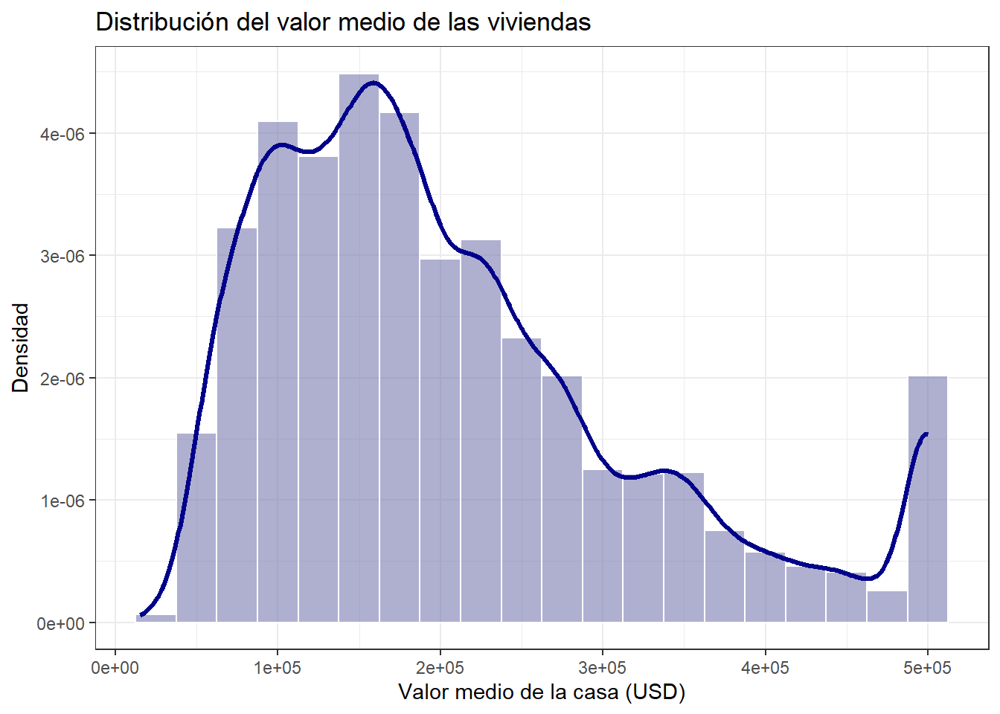
Interpretación del histograma: La mayor densidad se encuentra en los precios bajos y medios y disminuye hacia la derecha. El pico final alrededor de 500001 USD no debe interpretarse como un único dato atípico, sino como una acumulación causada por el límite superior con el que fue registrada la variable. La forma general confirma una asimetría positiva.
df %>%
ggplot(aes(y="", x=median_house_value))+
geom_boxplot(fill="#797bb0", color="black", outlier.color="red")+
stat_summary(fun=mean, geom="point", shape=20, size=3, color="darkblue")+
theme_bw()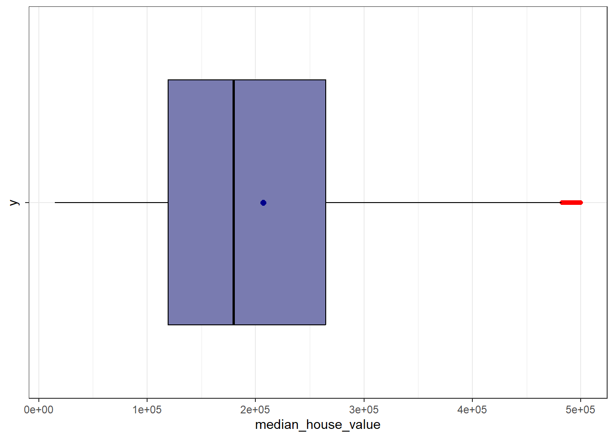
Interpretación del boxplot: La mediana se encuentra desplazada hacia la parte inferior del rango y aparecen numerosos valores por encima del límite superior del boxplot. Esto confirma que la cola se extiende hacia precios altos. La acumulación cercana al máximo del conjunto también contribuye a que existan muchos puntos señalados como atípicos estadísticos.
1.2 Analisis de las variables independientes (características)
df %>%
select(where(is.numeric), -median_house_value) %>%
pivot_longer(cols=everything(), names_to="variable", values_to="valor") %>%
group_by(variable) %>%
summarise(
n=length(valor), media=mean(valor), sd=sd(valor), mediana=median(valor),
RIC=IQR(valor), Q1=quantile(valor,0.25), Q3=quantile(valor,0.75),
minimo=min(valor), maximo=max(valor), asimetria=skewness(valor),
curtosis=kurtosis(valor)
)## # A tibble: 8 × 12
## variable n media sd mediana RIC Q1 Q3 minimo maximo
## <chr> <int> <dbl> <dbl> <dbl> <dbl> <dbl> <dbl> <dbl> <dbl>
## 1 househol… 20640 500. 3.82e2 409 3.25e2 280 605 1 6082
## 2 housing_… 20640 28.6 1.26e1 29 1.9 e1 18 37 1 52
## 3 latitude 20640 35.6 2.14e0 34.3 3.78e0 33.9 37.7 32.5 42.0
## 4 longitude 20640 -120. 2.00e0 -118. 3.79e0 -122. -118. -124. -114.
## 5 median_i… 20640 3.87 1.90e0 3.53 2.18e0 2.56 4.74 0.500 15.0
## 6 populati… 20640 1425. 1.13e3 1166 9.38e2 787 1725 3 35682
## 7 total_be… 20640 538. 4.19e2 438 3.46e2 297 643. 1 6445
## 8 total_ro… 20640 2636. 2.18e3 2127 1.70e3 1448. 3148 2 39320
## # ℹ 2 more variables: asimetria <dbl>, curtosis <dbl>Cada variable se interpreta por separado mediante su histograma y su boxplot.
1.2.1 Histogramas de las variables independientes
df %>%
ggplot(aes(x=households))+
geom_histogram(aes(y=after_stat(density)), binwidth=100, fill="#797bb0", color="white", alpha=0.6)+
geom_density(color="darkblue", linewidth=1.1)+theme_bw()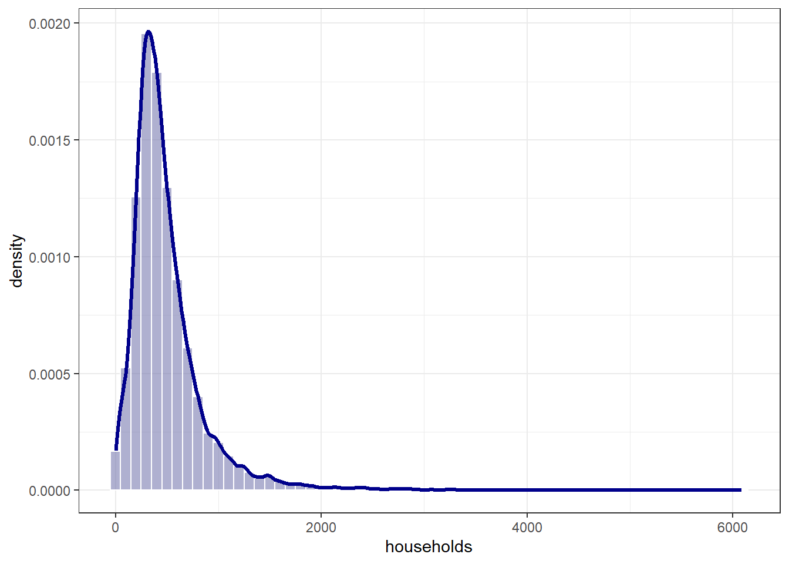
Interpretación: El número de hogares presenta una distribución asimétrica hacia la derecha. La mayoría de los distritos se concentra en cantidades relativamente bajas de hogares y existe una cola hacia valores elevados, correspondiente a distritos de mayor tamaño.
df %>%
ggplot(aes(x=housing_median_age))+
geom_histogram(aes(y=after_stat(density)), binwidth=2, fill="#797bb0", color="white", alpha=0.6)+
geom_density(color="darkblue", linewidth=1.1)+theme_bw()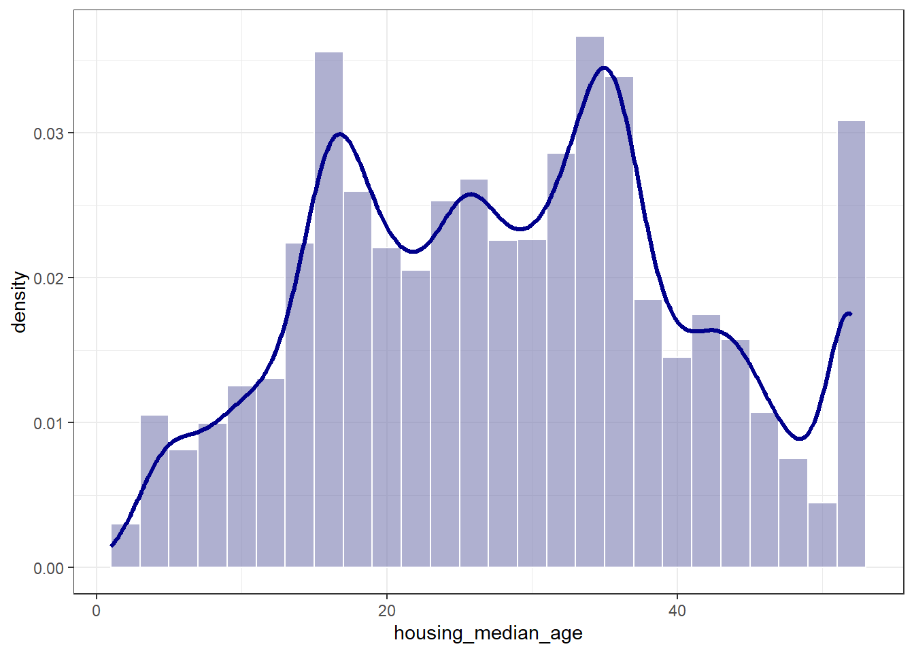
Interpretación: La antigüedad mediana de las viviendas se distribuye a lo largo de un rango amplio y presenta acumulación cerca de su límite superior. Esto sugiere que la variable posee un valor máximo de registro para los distritos con viviendas más antiguas.
df %>%
ggplot(aes(x=latitude))+
geom_histogram(aes(y=after_stat(density)), binwidth=0.5, fill="#797bb0", color="white", alpha=0.6)+
geom_density(color="darkblue", linewidth=1.1)+theme_bw()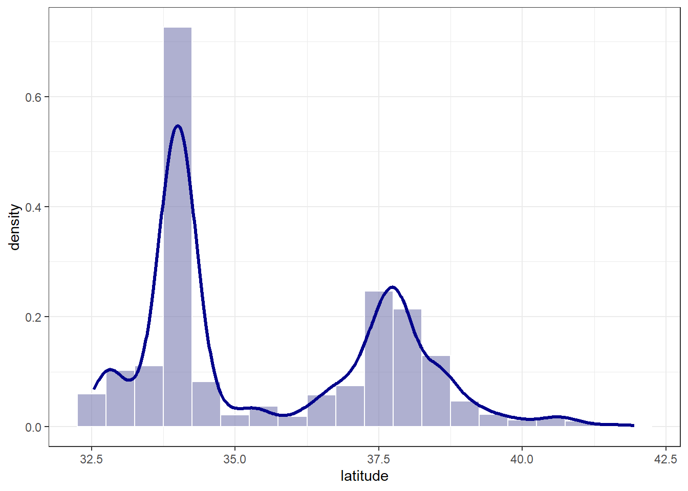
Interpretación: La latitud presenta varios grupos de concentración en lugar de una distribución normal. Este comportamiento responde a la ubicación geográfica de los distritos y a la concentración de observaciones en determinadas zonas de California.
df %>%
ggplot(aes(x=longitude))+
geom_histogram(aes(y=after_stat(density)), binwidth=0.5, fill="#797bb0", color="white", alpha=0.6)+
geom_density(color="darkblue", linewidth=1.1)+theme_bw()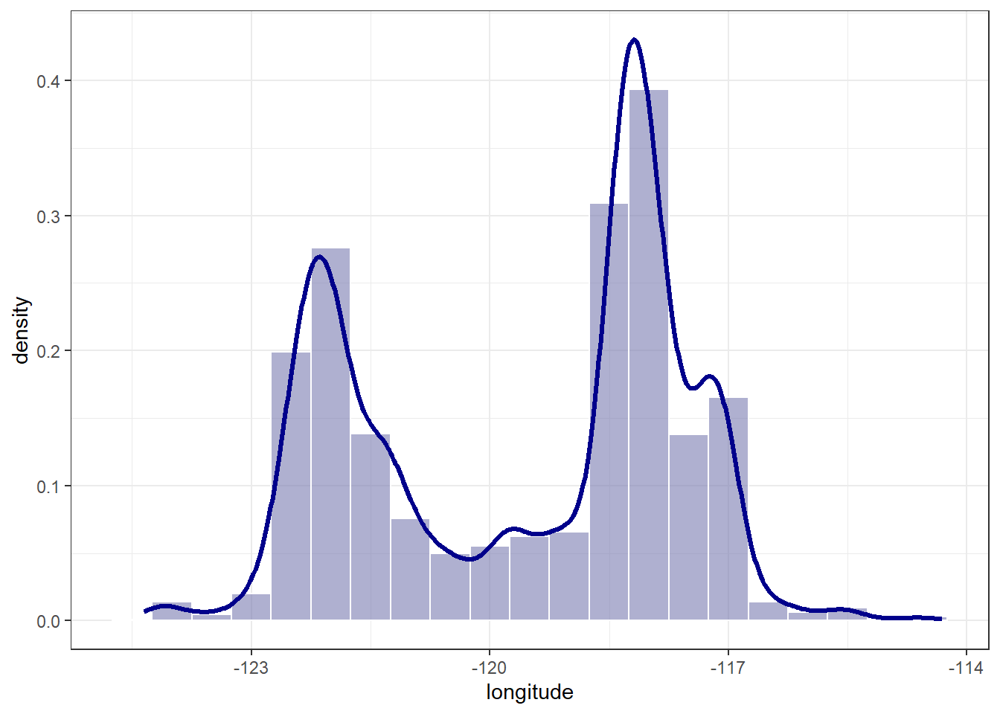
Interpretación: La longitud también presenta agrupaciones claramente definidas asociadas con la distribución geográfica de los distritos. Por tratarse de una coordenada espacial, sus concentraciones representan zonas con mayor presencia de observaciones.
df %>%
ggplot(aes(x=median_income))+
geom_histogram(aes(y=after_stat(density)), binwidth=0.5, fill="#797bb0", color="white", alpha=0.6)+
geom_density(color="darkblue", linewidth=1.1)+theme_bw()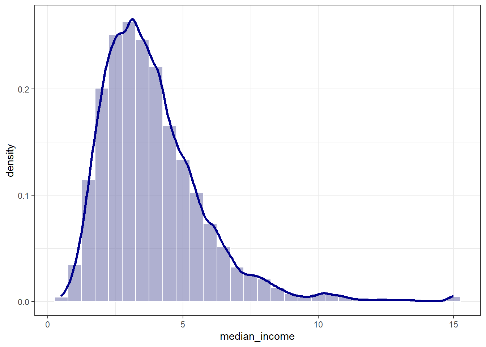
Interpretación: El ingreso mediano presenta asimetría positiva. La mayoría de los distritos se concentra en ingresos bajos e intermedios, mientras una cantidad menor alcanza niveles considerablemente altos.
df %>%
ggplot(aes(x=population))+
geom_histogram(aes(y=after_stat(density)), binwidth=500, fill="#797bb0", color="white", alpha=0.6)+
geom_density(color="darkblue", linewidth=1.1)+theme_bw()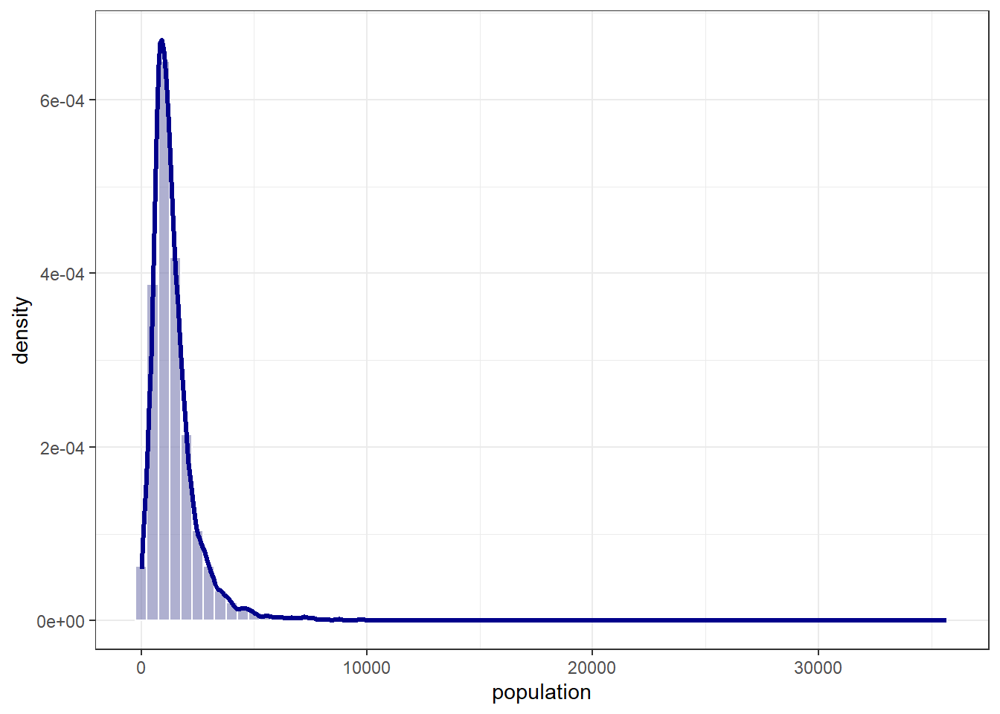
Interpretación: La población presenta una fuerte asimetría hacia la derecha. La mayor parte de los distritos tiene poblaciones relativamente pequeñas y unos pocos alcanzan cantidades muy elevadas.
df %>%
ggplot(aes(x=total_bedrooms))+
geom_histogram(aes(y=after_stat(density)), binwidth=100, fill="#797bb0", color="white", alpha=0.6)+
geom_density(color="darkblue", linewidth=1.1)+theme_bw()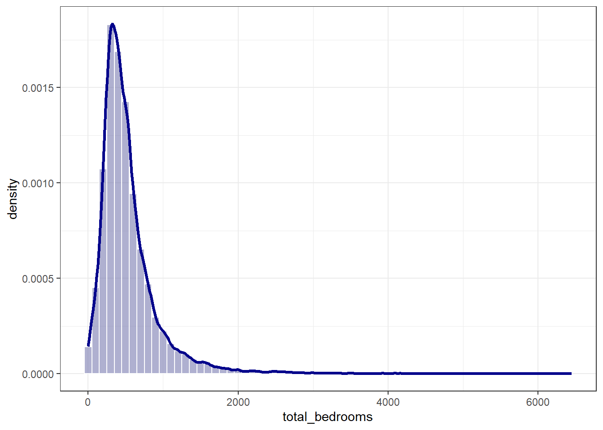
Interpretación: El total de dormitorios se concentra principalmente en valores bajos y medios, acompañado de una cola extensa hacia valores altos. La forma de la distribución refleja las diferencias de tamaño entre los distritos.
df %>%
ggplot(aes(x=total_rooms))+
geom_histogram(aes(y=after_stat(density)), binwidth=500, fill="#797bb0", color="white", alpha=0.6)+
geom_density(color="darkblue", linewidth=1.1)+theme_bw()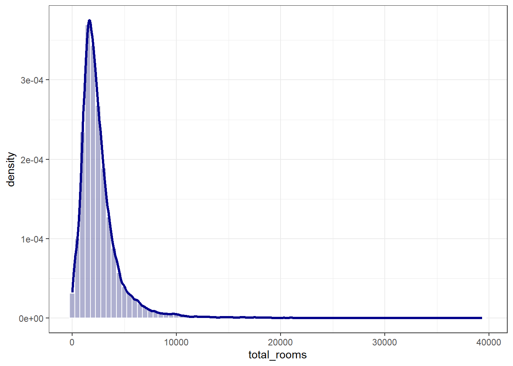
Interpretación: El total de habitaciones presenta una distribución fuertemente asimétrica hacia la derecha. La mayoría de los distritos posee cantidades moderadas, mientras unos pocos distritos presentan cantidades considerablemente superiores.
1.2.2 Boxplots de las variables independientes
df %>%
ggplot(aes(y=households, x=""))+
geom_boxplot(fill="#797bb0", color="black", outlier.color="red")+
stat_summary(fun=mean, geom="point", shape=20, size=3, color="darkblue")+theme_bw()->p1
df %>%
ggplot(aes(y=housing_median_age, x=""))+
geom_boxplot(fill="#797bb0", color="black", outlier.color="red")+
stat_summary(fun=mean, geom="point", shape=20, size=3, color="darkblue")+theme_bw()->p2
df %>%
ggplot(aes(y=latitude, x=""))+
geom_boxplot(fill="#797bb0", color="black", outlier.color="red")+
stat_summary(fun=mean, geom="point", shape=20, size=3, color="darkblue")+theme_bw()->p3
df %>%
ggplot(aes(y=longitude, x=""))+
geom_boxplot(fill="#797bb0", color="black", outlier.color="red")+
stat_summary(fun=mean, geom="point", shape=20, size=3, color="darkblue")+theme_bw()->p4
df %>%
ggplot(aes(y=median_income, x=""))+
geom_boxplot(fill="#797bb0", color="black", outlier.color="red")+
stat_summary(fun=mean, geom="point", shape=20, size=3, color="darkblue")+theme_bw()->p5
df %>%
ggplot(aes(y=population, x=""))+
geom_boxplot(fill="#797bb0", color="black", outlier.color="red")+
stat_summary(fun=mean, geom="point", shape=20, size=3, color="darkblue")+theme_bw()->p6
df %>%
ggplot(aes(y=total_bedrooms, x=""))+
geom_boxplot(fill="#797bb0", color="black", outlier.color="red")+
stat_summary(fun=mean, geom="point", shape=20, size=3, color="darkblue")+theme_bw()->p7
df %>%
ggplot(aes(y=total_rooms, x=""))+
geom_boxplot(fill="#797bb0", color="black", outlier.color="red")+
stat_summary(fun=mean, geom="point", shape=20, size=3, color="darkblue")+theme_bw()->p8Interpretación de households: El boxplot muestra numerosos valores superiores fuera del rango intercuartílico, coherentes con distritos que contienen una cantidad de hogares mucho mayor que la mayoría.
Interpretación de housing_median_age: La antigüedad mediana presenta una dispersión más equilibrada y no está dominada por una gran cantidad de valores extremos. La acumulación superior responde al límite observado en la variable.
Interpretación de latitude: La dispersión corresponde a las diferentes posiciones geográficas de los distritos. Los extremos representan ubicaciones alejadas del centro de la distribución y no necesariamente errores en los datos.
Interpretación de longitude: La longitud se mantiene dentro del rango geográfico esperado del conjunto. Sus extremos representan posiciones espaciales diferentes y deben conservarse para el análisis.
Interpretación de median_income: Se observan valores atípicos superiores, coherentes con la asimetría positiva de la variable y con la presencia de distritos de ingresos considerablemente mayores.
Interpretación de population: El boxplot evidencia numerosos valores altos fuera del rango central, confirmando la fuerte asimetría positiva y la existencia de distritos con poblaciones mucho mayores.
Interpretación de total_bedrooms: Se observan numerosos valores atípicos superiores. Al ser una cantidad absoluta, estos casos corresponden principalmente a distritos de mayor tamaño y posteriormente se analizarán mediante una medida relativa.
Interpretación de total_rooms: El boxplot confirma una cola superior extensa y numerosos valores alejados del rango intercuartílico. Esto refleja la heterogeneidad en el tamaño de los distritos.
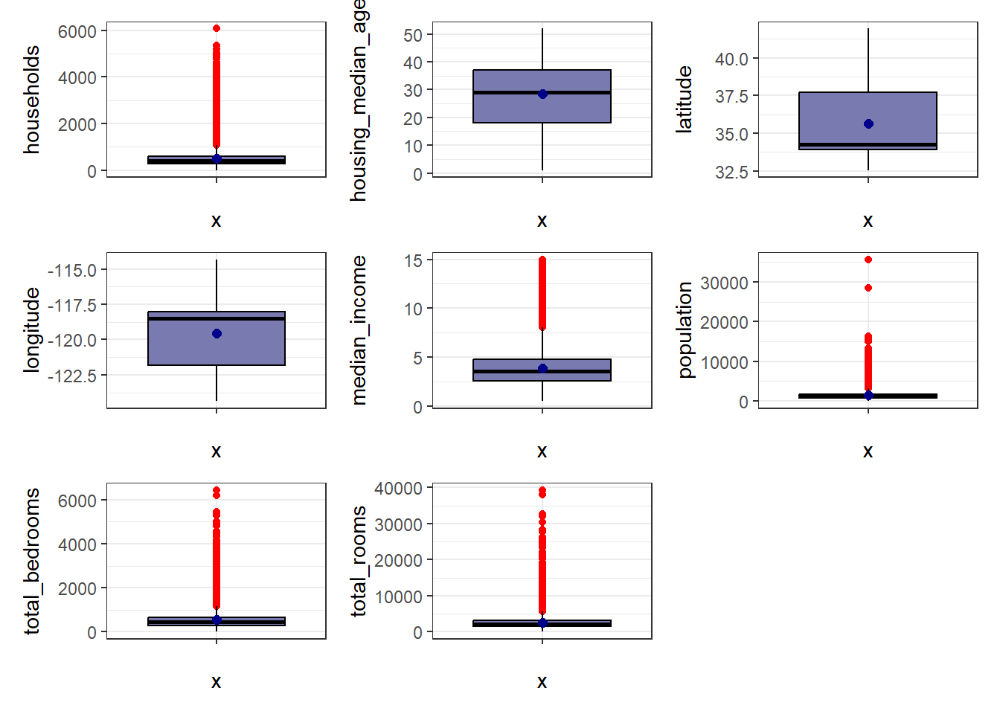
Interpretación conjunta: Los boxplots muestran que total_rooms, total_bedrooms, population y households poseen distribuciones especialmente asimétricas y numerosos valores altos. Estas cuatro características son cantidades absolutas relacionadas con el tamaño de los distritos, mientras las variables geográficas y housing_median_age presentan rangos más acotados.
1.3 Análisis univariado de la variable categórica ocean_proximity
tabla_ocean_b <- df %>%
count(ocean_proximity, name="n") %>%
mutate(Porcentaje=round((n/sum(n))*100,2),
Etiqueta=paste0(n," (",Porcentaje,"%)"))
tabla_ocean_b %>%
ggplot(aes(x=ocean_proximity, y=n))+
geom_col(fill="#008b08", width=0.6)+
geom_text(aes(label=Etiqueta), vjust=-0.5, size=4.0)+
facet_wrap(~"Distribución de la variable ocean_proximity")+
scale_y_continuous(expand=expansion(mult=c(0,0.15)))+
labs(x="Proximidad al océano", y="Frecuencia")+
theme_bw()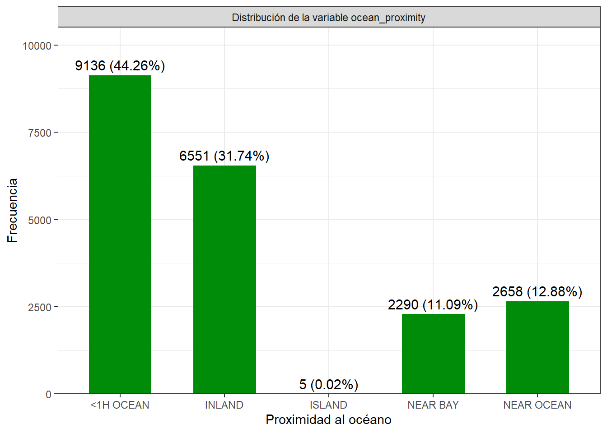
Interpretación: La categoría más frecuente es <1H OCEAN, seguida por INLAND y NEAR OCEAN. NEAR BAY tiene una frecuencia menor y ISLAND aparece únicamente en 5 observaciones. Por tanto, la variable categórica está claramente desbalanceada y las conclusiones sobre ISLAND deben tomarse con cautela debido a su tamaño extremadamente pequeño.
1.4 Análisis bivariado: variables independientes numéricas vs. variable dependiente
A continuación se compara cada característica numérica con median_house_value mediante gráficos de dispersión. La interpretación se realiza a partir de los patrones observados en los gráficos de dispersión.
1.4.1 longitude vs. median_house_value
df %>%
ggplot(aes(x=longitude, y=median_house_value))+
geom_point(alpha=0.4, color="darkblue")+
labs(y="Valor medio de la vivienda", x="Longitud")+
theme_bw()+
facet_grid(.~"Dispersión entre longitud y valor medio de vivienda")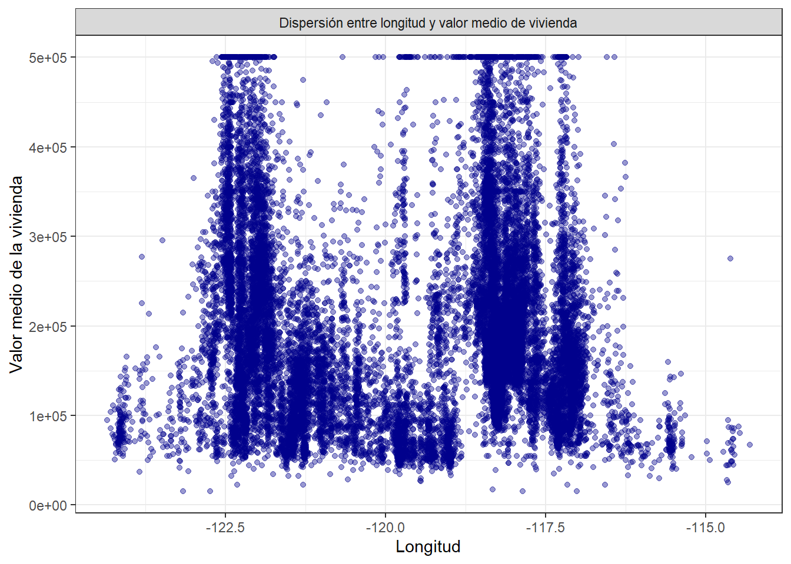
Interpretación: La nube de puntos entre longitud y valor medio de la vivienda no sigue una línea recta clara. Se observan concentraciones de precios diferentes según determinadas longitudes, lo que sugiere que la ubicación geográfica influye de forma compleja y que la relación debe interpretarse junto con la latitud y la proximidad al océano.
1.4.2 latitude vs. median_house_value
df %>%
ggplot(aes(x=latitude, y=median_house_value))+
geom_point(alpha=0.4, color="darkblue")+
labs(y="Valor medio de la vivienda", x="Latitud")+
theme_bw()+
facet_grid(.~"Dispersión entre latitud y valor medio de vivienda")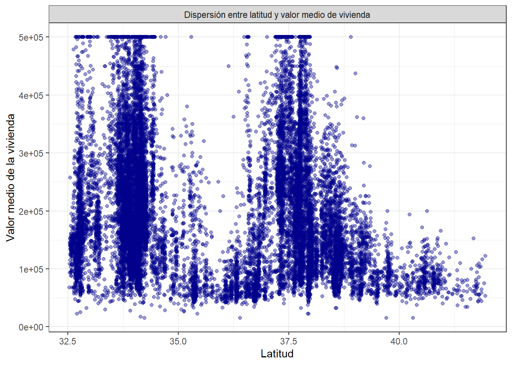
Interpretación: La dispersión entre latitud y valor de la vivienda muestra agrupaciones y cambios de nivel según la ubicación. No se aprecia una tendencia lineal única; en cambio, ciertas franjas de latitud concentran viviendas de mayor valor. Esto indica un efecto geográfico que no puede resumirse únicamente como aumento o disminución constante.
1.4.3 housing_median_age vs. median_house_value
df %>%
ggplot(aes(x=housing_median_age, y=median_house_value))+
geom_point(alpha=0.4, color="darkblue")+
labs(y="Valor medio de la vivienda", x="Antigüedad mediana de la vivienda")+
theme_bw()+
facet_grid(.~"Dispersión entre antigüedad mediana de la vivienda y valor medio de vivienda")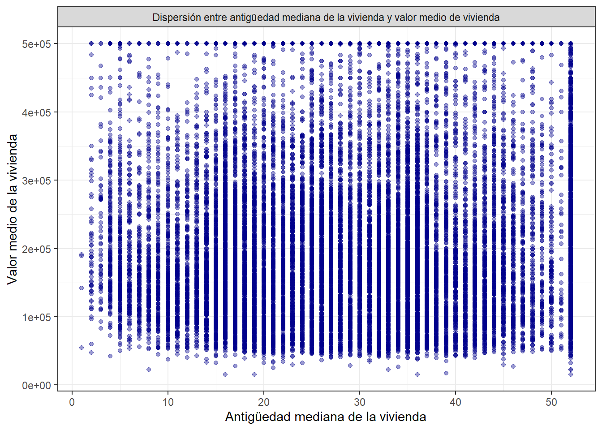
Interpretación: La edad mediana de las viviendas muestra una relación visual débil con el valor de la vivienda. Los precios aparecen muy dispersos para prácticamente todas las edades, aunque algunos grupos de viviendas más antiguas alcanzan valores altos. Por sí sola, esta característica no parece separar claramente los precios.
1.4.4 total_rooms vs. median_house_value
df %>%
ggplot(aes(x=total_rooms, y=median_house_value))+
geom_point(alpha=0.4, color="darkblue")+
labs(y="Valor medio de la vivienda", x="Total de habitaciones")+
theme_bw()+
facet_grid(.~"Dispersión entre total de habitaciones y valor medio de vivienda")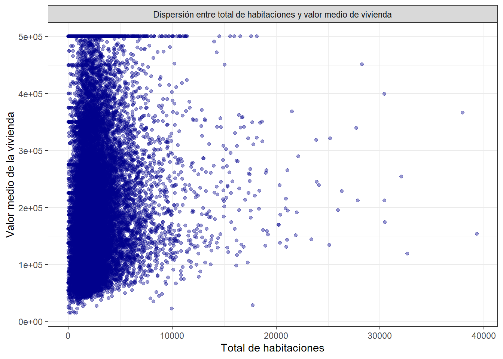
Interpretación: El gráfico muestra mucha dispersión: distritos con cantidades similares de habitaciones pueden tener valores de vivienda muy diferentes. También se observa que los valores absolutos de habitaciones aumentan con el tamaño del distrito, por lo que esta variable puede resultar más informativa al expresarse de forma relativa por hogar.
1.4.5 total_bedrooms vs. median_house_value
df %>%
ggplot(aes(x=total_bedrooms, y=median_house_value))+
geom_point(alpha=0.4, color="darkblue")+
labs(y="Valor medio de la vivienda", x="Total de dormitorios")+
theme_bw()+
facet_grid(.~"Dispersión entre total de dormitorios y valor medio de vivienda")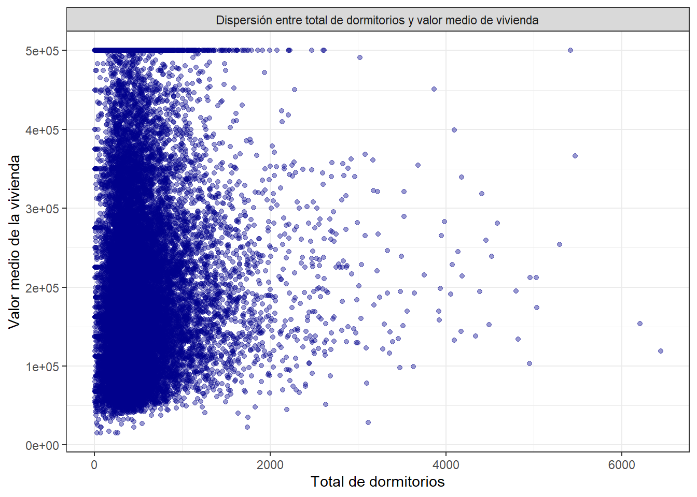
Interpretación: La cantidad total de dormitorios tampoco presenta una relación lineal clara con el valor de la vivienda. La mayor densidad de observaciones se concentra en valores bajos de dormitorios y existe una cola de distritos grandes. Al ser una medida absoluta, resulta razonable compararla proporcionalmente con el total de habitaciones.
1.4.6 population vs. median_house_value
df %>%
ggplot(aes(x=population, y=median_house_value))+
geom_point(alpha=0.4, color="darkblue")+
labs(y="Valor medio de la vivienda", x="Población")+
theme_bw()+
facet_grid(.~"Dispersión entre población y valor medio de vivienda")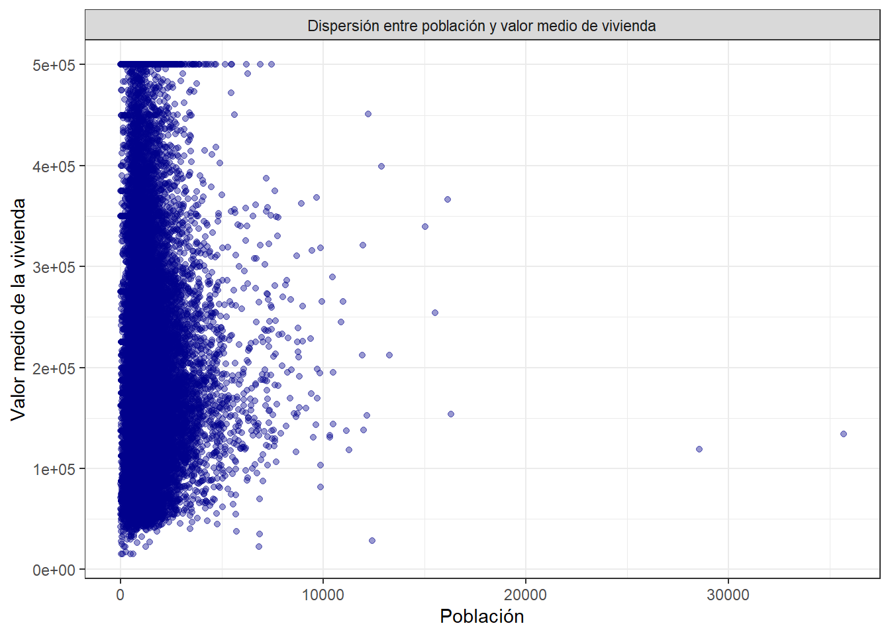
Interpretación: La población muestra una nube muy concentrada en valores bajos y una dispersión amplia del precio dentro de ese rango. Los distritos con poblaciones muy altas no implican necesariamente viviendas más costosas. Esto sugiere que una medida de habitantes por hogar puede representar mejor la intensidad poblacional.
1.4.7 households vs. median_house_value
df %>%
ggplot(aes(x=households, y=median_house_value))+
geom_point(alpha=0.4, color="darkblue")+
labs(y="Valor medio de la vivienda", x="Número de hogares")+
theme_bw()+
facet_grid(.~"Dispersión entre número de hogares y valor medio de vivienda")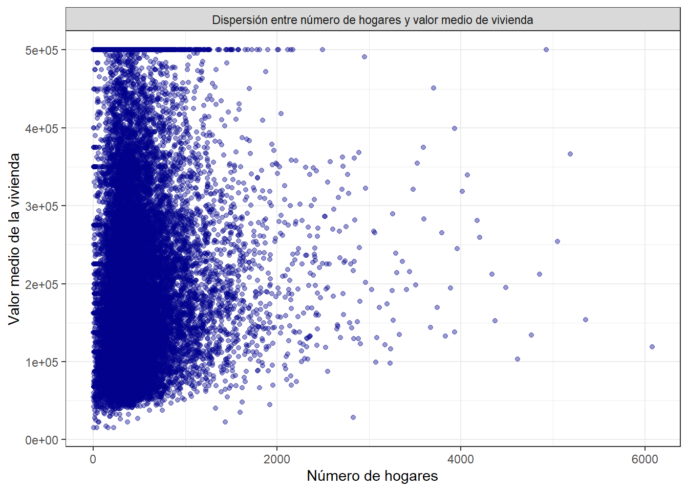
Interpretación: El número de hogares presenta un patrón similar al de otras medidas de tamaño: la mayor parte de los datos se agrupa en valores bajos y los precios varían ampliamente. Como hogares, habitaciones, dormitorios y población crecen conjuntamente en distritos grandes, conviene construir variables relativas que reduzcan ese efecto de escala.
1.4.8 median_income vs. median_house_value
df %>%
ggplot(aes(x=median_income, y=median_house_value))+
geom_point(alpha=0.4, color="darkblue")+
labs(y="Valor medio de la vivienda", x="Ingreso mediano")+
theme_bw()+
facet_grid(.~"Dispersión entre ingreso mediano y valor medio de vivienda")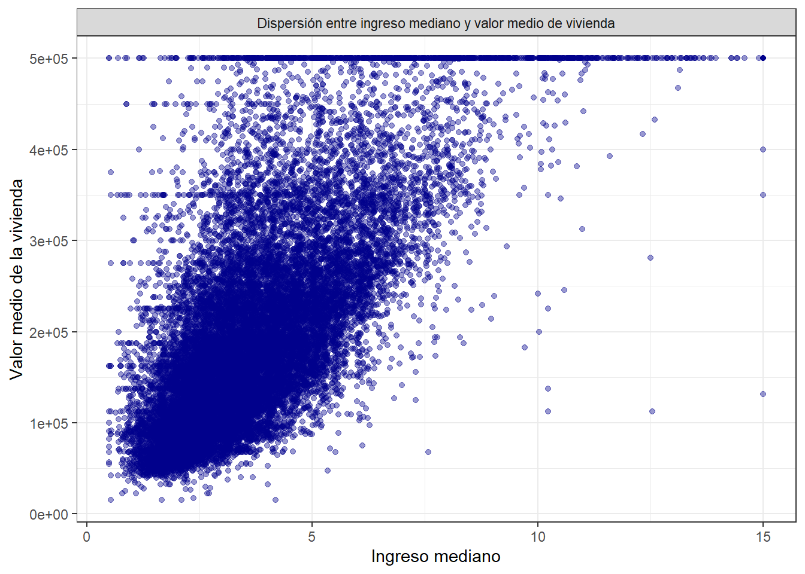
Interpretación: El ingreso mediano presenta la tendencia visual más clara respecto al valor de la vivienda: a medida que aumenta el ingreso, los precios tienden a ubicarse en niveles superiores. Aun así, existe dispersión y un límite visible en el valor máximo de la vivienda, por lo que la relación no es perfecta.
1.5 Análisis bivariado: variable categórica vs. variables numéricas
Ahora se compara ocean_proximity con cada variable numérica mediante boxplots para observar diferencias de distribución entre categorías.
1.5.1 ocean_proximity vs. longitude
df %>%
ggplot(aes(x=ocean_proximity, y=longitude))+
geom_boxplot(fill="#797bb0", outlier.color="red")+
labs(x="Proximidad al océano", y="Longitud", title="Longitud según proximidad al océano")+
theme_bw()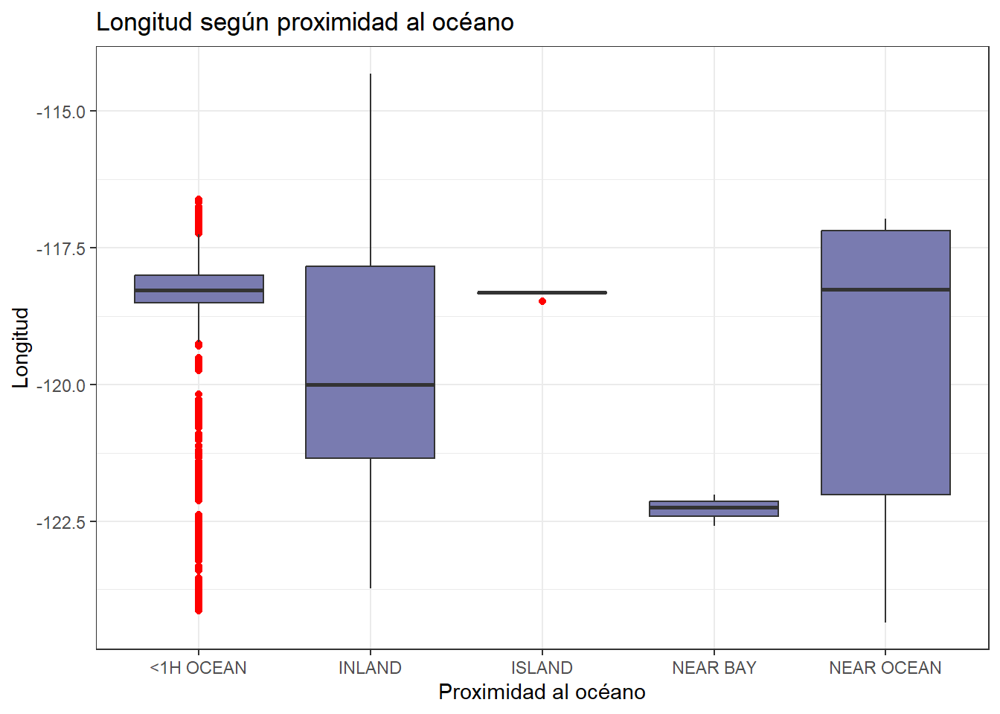
Interpretación: Las distribuciones de longitud cambian claramente entre categorías de proximidad al océano, algo esperado porque ambas variables describen ubicación. Las categorías costeras se concentran en longitudes distintas de las zonas interiores, mientras ISLAND aparece en un rango muy reducido.
1.5.2 ocean_proximity vs. latitude
df %>%
ggplot(aes(x=ocean_proximity, y=latitude))+
geom_boxplot(fill="#797bb0", outlier.color="red")+
labs(x="Proximidad al océano", y="Latitud", title="Latitud según proximidad al océano")+
theme_bw()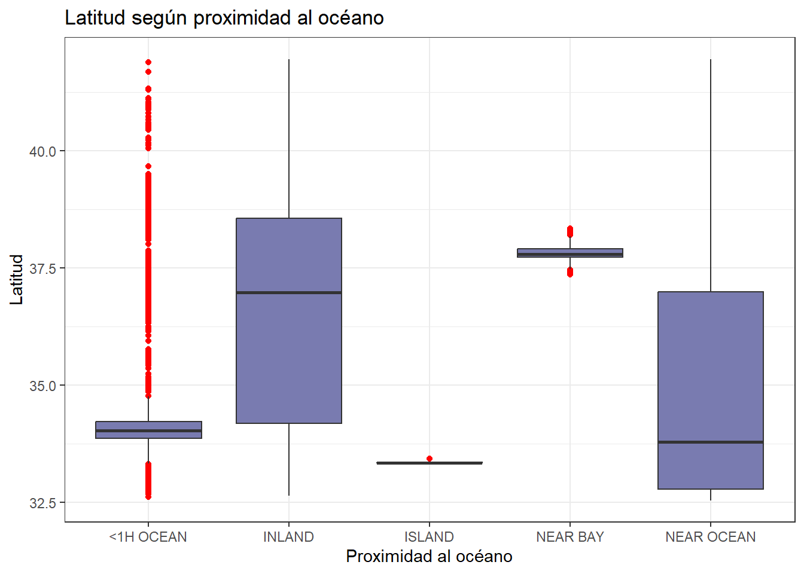
Interpretación: La latitud también varía según ocean_proximity. Las cajas muestran que las categorías ocupan zonas geográficas diferentes, por lo que la proximidad al océano resume parcialmente información espacial contenida en latitud y longitud.
1.5.3 ocean_proximity vs. housing_median_age
df %>%
ggplot(aes(x=ocean_proximity, y=housing_median_age))+
geom_boxplot(fill="#797bb0", outlier.color="red")+
labs(x="Proximidad al océano", y="Antigüedad mediana de la vivienda", title="Antigüedad mediana de la vivienda según proximidad al océano")+
theme_bw()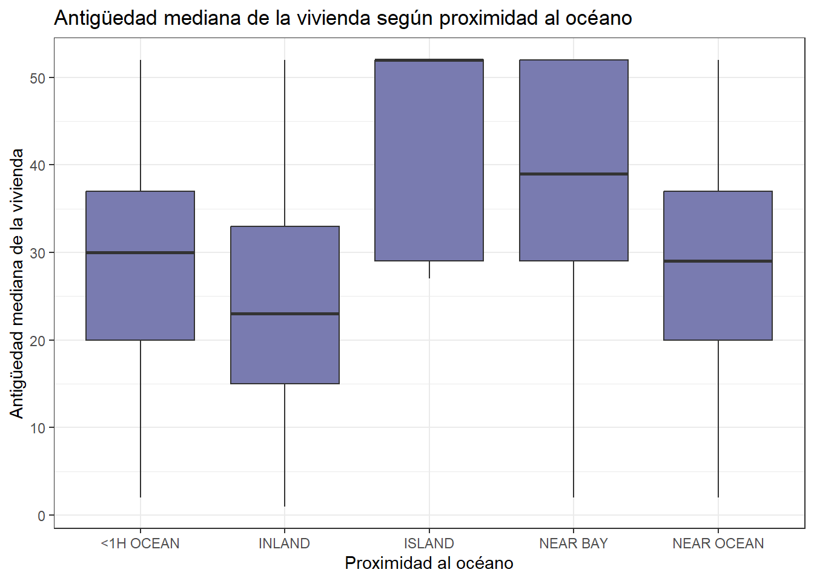
Interpretación: La edad de las viviendas presenta diferencias moderadas entre categorías. Algunas zonas próximas al océano muestran medianas de antigüedad mayores, mientras las zonas interiores concentran viviendas relativamente más recientes. Sin embargo, existe solapamiento considerable entre grupos.
1.5.4 ocean_proximity vs. total_rooms
df %>%
ggplot(aes(x=ocean_proximity, y=total_rooms))+
geom_boxplot(fill="#797bb0", outlier.color="red")+
labs(x="Proximidad al océano", y="Total de habitaciones", title="Total de habitaciones según proximidad al océano")+
theme_bw()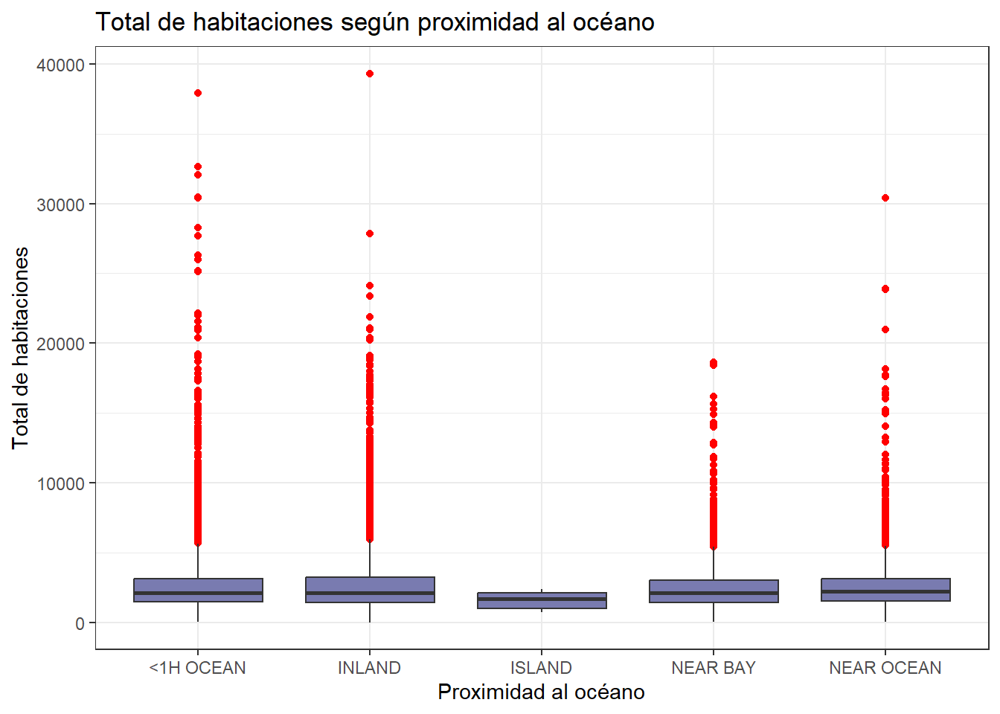
Interpretación: El total de habitaciones presenta alta dispersión dentro de todas las categorías y numerosos valores elevados. Las diferencias entre grupos están influenciadas por el tamaño de los distritos, por lo que comparar únicamente cantidades absolutas puede ocultar patrones más útiles.
1.5.5 ocean_proximity vs. total_bedrooms
df %>%
ggplot(aes(x=ocean_proximity, y=total_bedrooms))+
geom_boxplot(fill="#797bb0", outlier.color="red")+
labs(x="Proximidad al océano", y="Total de dormitorios", title="Total de dormitorios según proximidad al océano")+
theme_bw()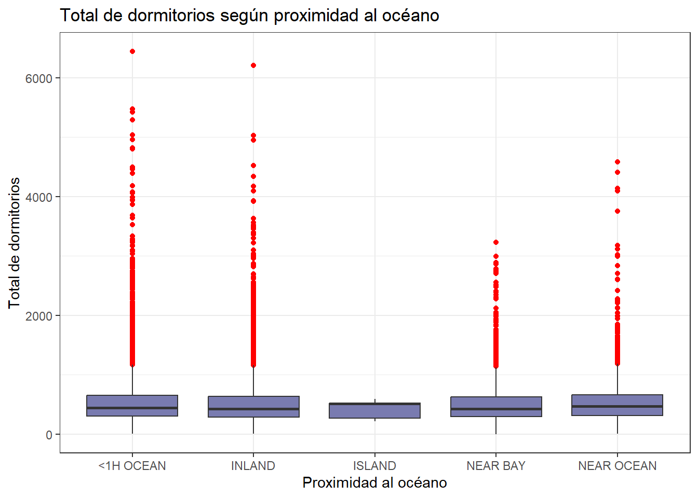
Interpretación: Los dormitorios totales muestran una situación similar a total_rooms: existe bastante solapamiento entre categorías y una fuerte presencia de valores altos. Esto refuerza la conveniencia de expresar dormitorios como proporción del total de habitaciones.
1.5.6 ocean_proximity vs. population
df %>%
ggplot(aes(x=ocean_proximity, y=population))+
geom_boxplot(fill="#797bb0", outlier.color="red")+
labs(x="Proximidad al océano", y="Población", title="Población según proximidad al océano")+
theme_bw()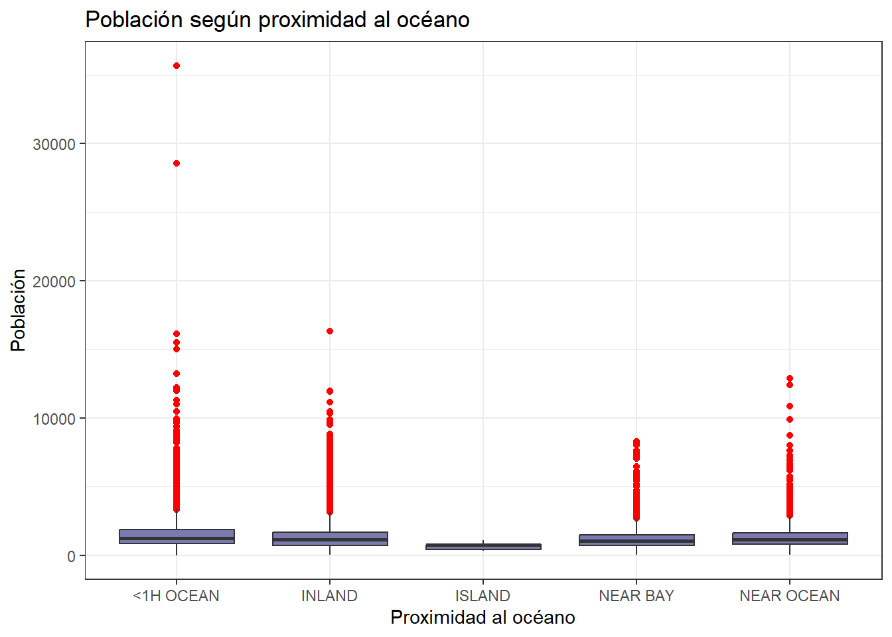
Interpretación: La población varía ampliamente dentro de cada categoría de proximidad. Las zonas interiores contienen varios distritos de gran población, pero existe solapamiento entre categorías. Una medida relativa por hogar puede facilitar la comparación entre distritos de tamaños distintos.
1.5.7 ocean_proximity vs. households
df %>%
ggplot(aes(x=ocean_proximity, y=households))+
geom_boxplot(fill="#797bb0", outlier.color="red")+
labs(x="Proximidad al océano", y="Número de hogares", title="Número de hogares según proximidad al océano")+
theme_bw()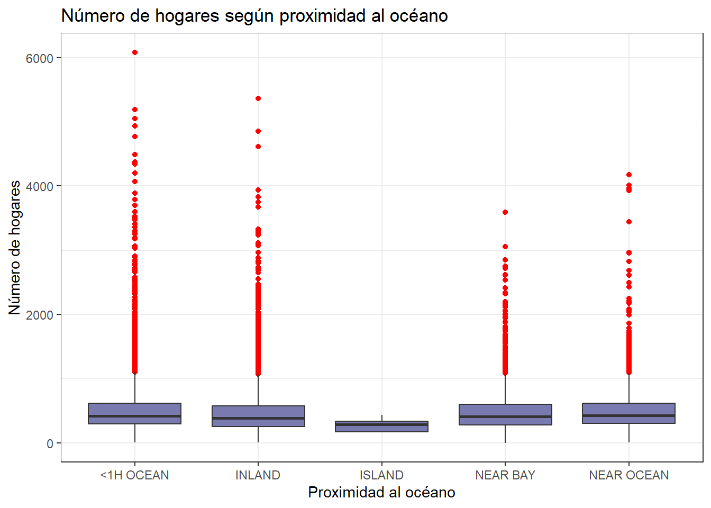
Interpretación: El número de hogares presenta gran dispersión y valores extremos en varias categorías. Las diferencias observadas dependen en buena parte del tamaño de cada distrito, por lo que hogares funciona mejor como denominador para construir indicadores relativos que como medida aislada de escala.
1.5.8 ocean_proximity vs. median_income
df %>%
ggplot(aes(x=ocean_proximity, y=median_income))+
geom_boxplot(fill="#797bb0", outlier.color="red")+
labs(x="Proximidad al océano", y="Ingreso mediano", title="Ingreso mediano según proximidad al océano")+
theme_bw()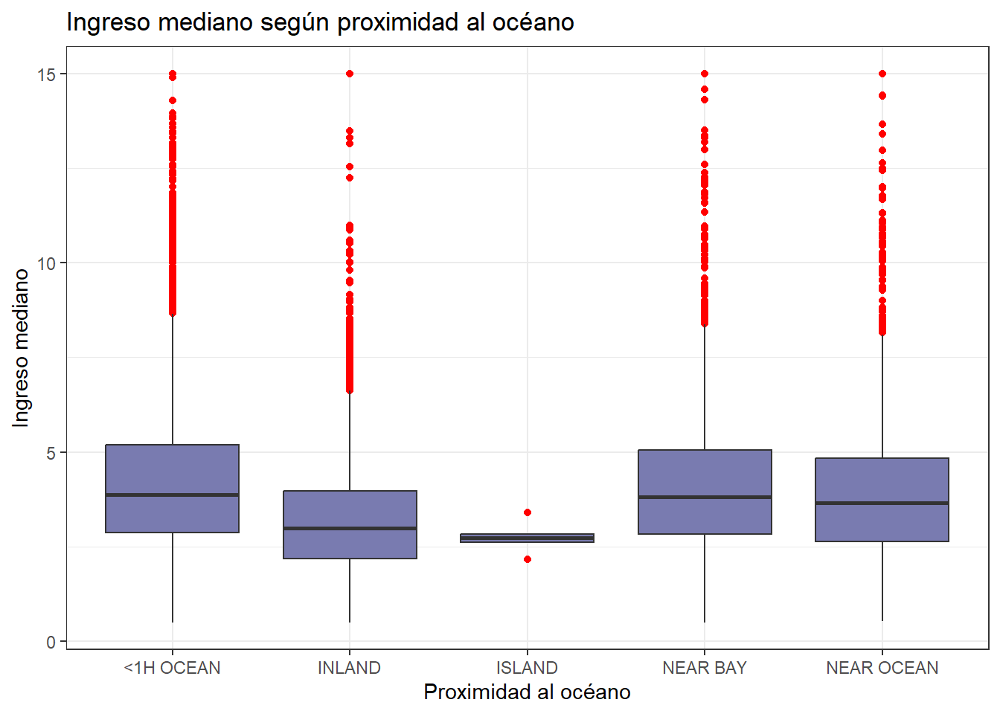
Interpretación: El ingreso mediano sí muestra diferencias visibles entre categorías de proximidad al océano. Las zonas costeras e ISLAND tienden a concentrar ingresos más altos que INLAND, aunque las distribuciones se superponen. Esto sugiere que ubicación e ingreso pueden aportar información complementaria sobre el valor de la vivienda.
1.5.9 ocean_proximity vs. median_house_value
df %>%
group_by(ocean_proximity) %>%
summarise(
n=length(median_house_value),
media=mean(median_house_value),
sd=sd(median_house_value),
mediana=median(median_house_value),
RIC=IQR(median_house_value),
Q1=quantile(median_house_value,0.25),
Q3=quantile(median_house_value,0.75),
minimo=min(median_house_value),
maximo=max(median_house_value),
asimetria=skewness(median_house_value),
curtosis=kurtosis(median_house_value)
)## # A tibble: 5 × 12
## ocean_proximity n media sd mediana RIC Q1 Q3 minimo maximo
## <fct> <int> <dbl> <dbl> <dbl> <dbl> <dbl> <dbl> <dbl> <dbl>
## 1 <1H OCEAN 9136 2.40e5 1.06e5 214850 125000 164100 289100 17500 500001
## 2 INLAND 6551 1.25e5 7.00e4 108500 71450 77500 148950 14999 500001
## 3 ISLAND 5 3.80e5 8.06e4 414700 150000 300000 450000 287500 450000
## 4 NEAR BAY 2290 2.59e5 1.23e5 233800 183200 162500 345700 22500 500001
## 5 NEAR OCEAN 2658 2.49e5 1.22e5 229450 172750 150000 322750 22500 500001
## # ℹ 2 more variables: asimetria <dbl>, curtosis <dbl>df %>%
ggplot(aes(x=ocean_proximity, y=median_house_value))+
geom_boxplot(fill="#797bb0", outlier.color="red")+
labs(x="Proximidad al océano", y="Valor medio de la vivienda", title="Valor medio de la vivienda según proximidad al océano")+
theme_bw()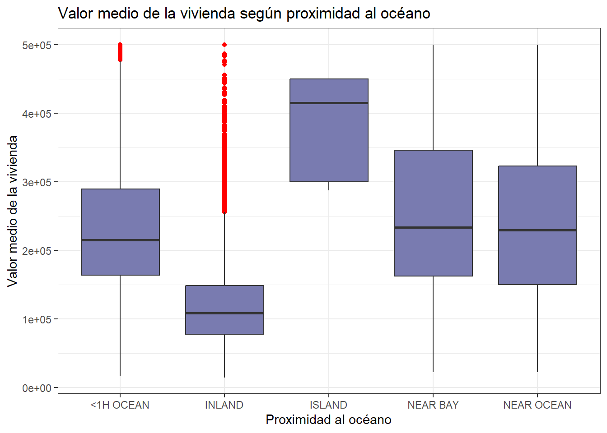
Interpretación: El valor medio de la vivienda cambia de forma visible según la proximidad al océano. Las categorías cercanas a la costa presentan, en general, niveles centrales de precio superiores a INLAND, mientras ISLAND contiene muy pocas observaciones. La amplitud de las cajas muestra que la proximidad al océano no explica por sí sola toda la variación del precio.
1.6 Exploración conjunta con ggpairs()
Se utiliza ggpairs() para inspeccionar visualmente las posibles relaciones entre las variables numéricas. Los paneles continuos se representan mediante gráficos de puntos para identificar patrones conjuntos entre las características.
df %>%
select(where(is.numeric)) %>%
ggpairs(
upper=list(continuous=wrap("points", alpha=0.15, size=0.3)),
lower=list(continuous=wrap("points", alpha=0.15, size=0.3)),
diag=list(continuous="densityDiag")
)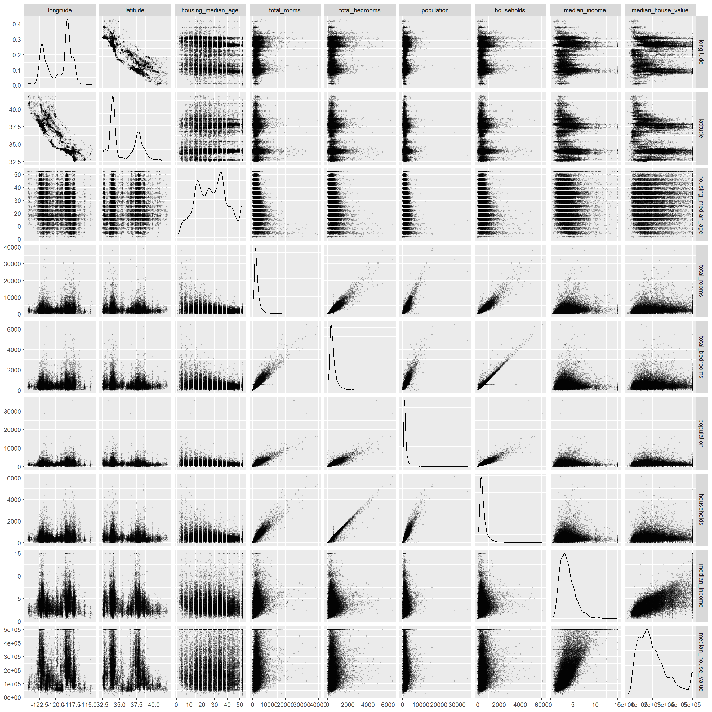
Interpretación: En la matriz se observan visualmente relaciones muy marcadas entre total_rooms, total_bedrooms, population y households. Estas variables son cantidades absolutas asociadas al tamaño de cada distrito: cuando un distrito contiene más hogares, normalmente también contiene más habitaciones, dormitorios y habitantes. Debido a este patrón visual, mantener únicamente las cantidades absolutas puede repetir información de escala. Por ello se propone ingeniería de características mediante ratios que describan la composición interna de cada distrito.
1.7 Ingeniería de características mediante ratios
A partir de los patrones observados en ggpairs(), se crean tres variables relativas que permiten representar la información en función del tamaño y la composición de cada distrito.
df <- df %>%
mutate(
rooms_per_household = total_rooms / households,
bedrooms_per_room = total_bedrooms / total_rooms,
population_per_household = population / households
)rooms_per_household representa cuántas habitaciones corresponden en promedio a cada hogar; bedrooms_per_room representa qué proporción de las habitaciones corresponde a dormitorios; y population_per_household representa cuántas personas corresponden en promedio a cada hogar.
1.7.1 Resumen estadístico de las nuevas variables
df %>%
select(rooms_per_household, bedrooms_per_room, population_per_household) %>%
pivot_longer(cols=everything(), names_to="variable", values_to="valor") %>%
group_by(variable) %>%
summarise(
n=length(valor), media=mean(valor), sd=sd(valor), mediana=median(valor),
RIC=IQR(valor), Q1=quantile(valor,0.25), Q3=quantile(valor,0.75),
minimo=min(valor), maximo=max(valor), asimetria=skewness(valor),
curtosis=kurtosis(valor)
)## # A tibble: 3 × 12
## variable n media sd mediana RIC Q1 Q3 minimo maximo
## <chr> <int> <dbl> <dbl> <dbl> <dbl> <dbl> <dbl> <dbl> <dbl>
## 1 bedrooms_per_room 20640 0.214 0.0698 0.203 0.0649 0.175 0.240 0.0459 3.49e0
## 2 population_per_h… 20640 3.07 10.4 2.82 0.853 2.43 3.28 0.692 1.24e3
## 3 rooms_per_househ… 20640 5.43 2.47 5.23 1.61 4.44 6.05 0.846 1.42e2
## # ℹ 2 more variables: asimetria <dbl>, curtosis <dbl>1.7.2 EDA de rooms_per_household
df %>%
ggplot(aes(x=rooms_per_household))+
geom_histogram(aes(y=after_stat(density)), binwidth=1, fill="#797bb0", color="white", alpha=0.6)+
geom_density(color="darkblue", linewidth=1.1)+
labs(title="Distribución de habitaciones por hogar", x="Habitaciones por hogar", y="Densidad")+
theme_bw()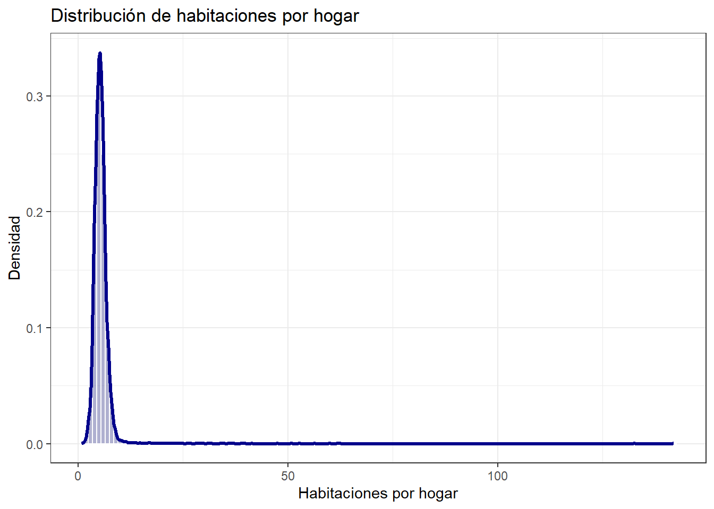
Interpretación del histograma: El número de habitaciones por hogar concentra la mayoría de las observaciones en un intervalo estrecho, pero presenta una cola derecha muy extensa producida por unos pocos distritos con razones excepcionalmente altas. El boxplot confirma valores extremos superiores y la asimetría calculada es fuerte, por lo que se justifica aplicar una transformación logarítmica.
df %>%
ggplot(aes(y=rooms_per_household, x=""))+
geom_boxplot(fill="#797bb0", color="black", outlier.color="red")+
stat_summary(fun=mean, geom="point", shape=20, size=3, color="darkblue")+
labs(x="", y="Habitaciones por hogar", title="Boxplot de habitaciones por hogar")+
theme_bw()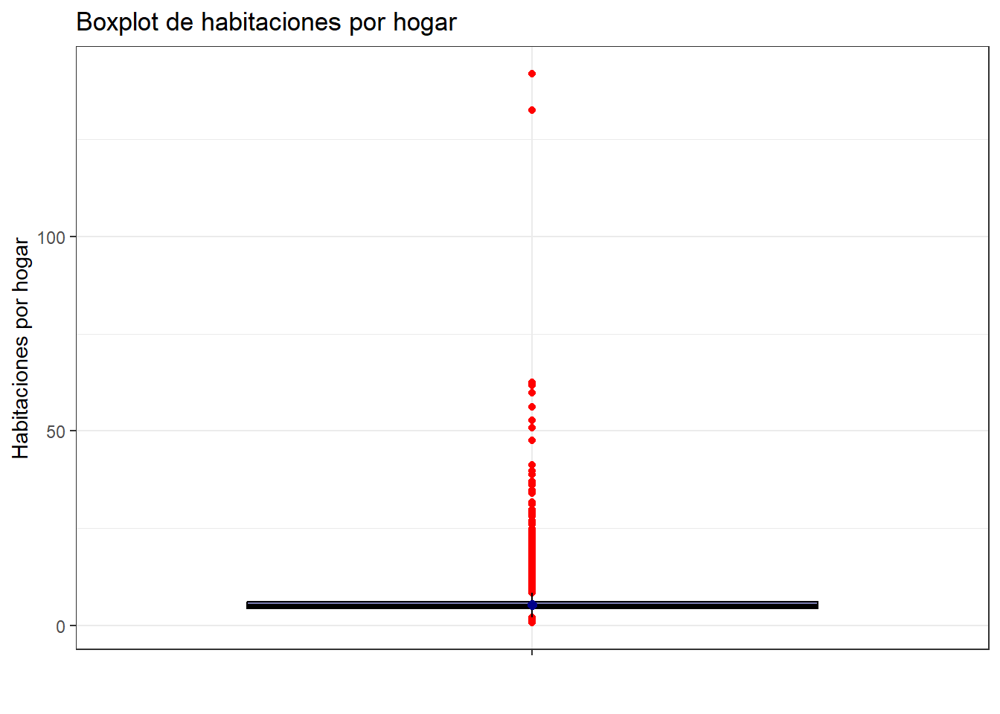
Interpretación del boxplot: El boxplot de rooms_per_household confirma que los valores extremos superiores se encuentran muy separados del rango central. La diferencia entre el cuerpo principal y esos casos explica la fuerte asimetría positiva observada en el resumen estadístico y respalda el uso posterior de una transformación logarítmica.
df %>%
ggplot(aes(x=rooms_per_household, y=median_house_value))+
geom_point(alpha=0.4, color="darkblue")+
labs(x="Habitaciones por hogar", y="Valor medio de la vivienda",
title="Habitaciones por hogar vs. valor medio de vivienda")+
theme_bw()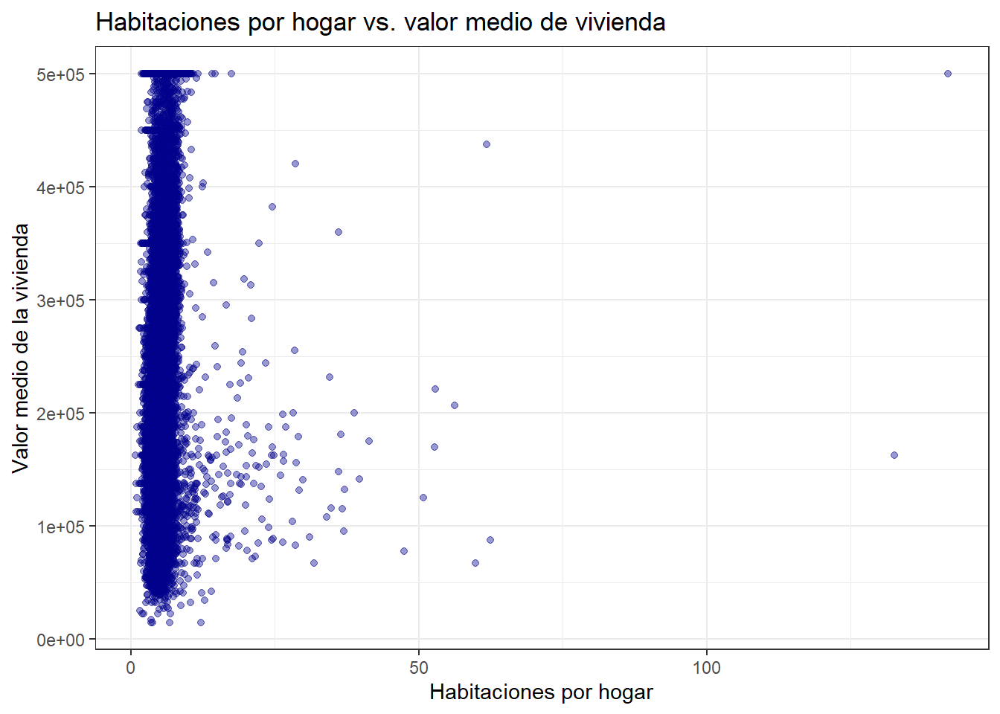
Interpretación del gráfico bivariado: La relación entre habitaciones por hogar y valor de la vivienda se concentra principalmente en los valores habituales del ratio. Los casos extremos comprimen visualmente la nube principal, por lo que la versión logarítmica permite evaluar con mayor claridad el patrón del grueso de las observaciones.
df %>%
ggplot(aes(x=ocean_proximity, y=rooms_per_household))+
geom_boxplot(fill="#797bb0", outlier.color="red")+
labs(x="Proximidad al océano", y="Habitaciones por hogar",
title="Habitaciones por hogar según proximidad al océano")+
theme_bw()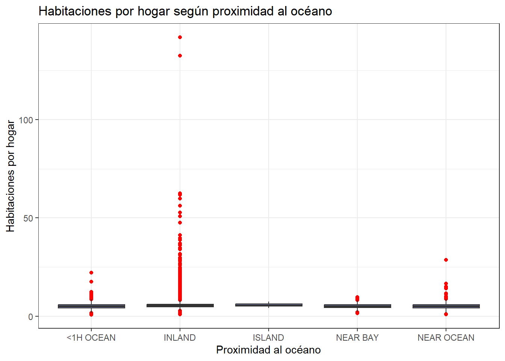
Interpretación numérica vs. categórica: Las habitaciones por hogar muestran diferencias de nivel y dispersión entre categorías de proximidad al océano, aunque existe solapamiento. Los valores extremos afectan varias categorías, por lo que la transformación logarítmica facilita comparar sus distribuciones centrales.
1.7.3 EDA de bedrooms_per_room
df %>%
ggplot(aes(x=bedrooms_per_room))+
geom_histogram(aes(y=after_stat(density)), binwidth=0.02, fill="#797bb0", color="white", alpha=0.6)+
geom_density(color="darkblue", linewidth=1.1)+
labs(title="Distribución de dormitorios por habitación", x="Dormitorios por habitación", y="Densidad")+
theme_bw()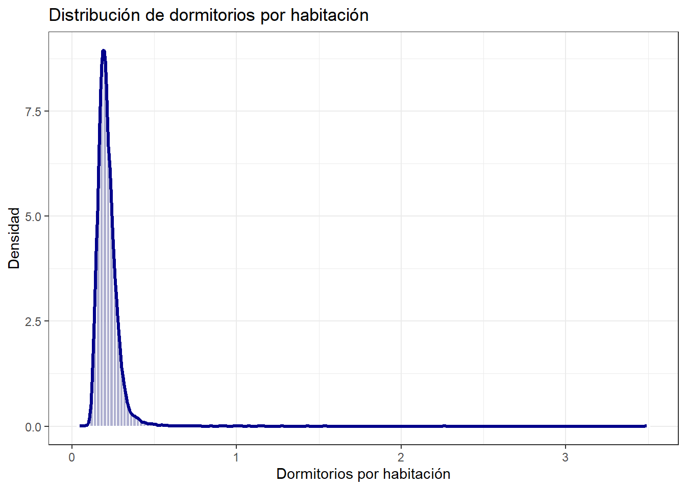
Interpretación del histograma: La proporción de dormitorios sobre habitaciones se concentra alrededor de valores relativamente bajos, pero contiene observaciones extremas que alargan la distribución hacia la derecha. Aunque es una proporción, la presencia de esos casos produce una asimetría fuerte; por ello también se aplica log1p para reducir la influencia visual de la cola.
df %>%
ggplot(aes(y=bedrooms_per_room, x=""))+
geom_boxplot(fill="#797bb0", color="black", outlier.color="red")+
stat_summary(fun=mean, geom="point", shape=20, size=3, color="darkblue")+
labs(x="", y="Dormitorios por habitación", title="Boxplot de dormitorios por habitación")+
theme_bw()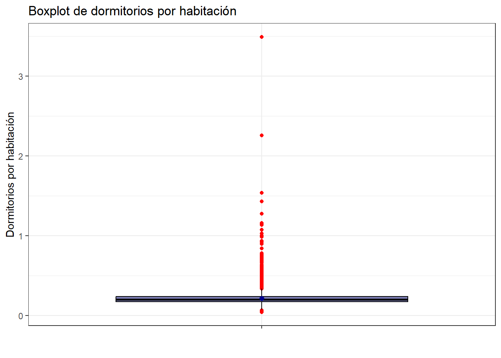
Interpretación del boxplot: El boxplot de bedrooms_per_room confirma que los valores extremos superiores se encuentran muy separados del rango central. La diferencia entre el cuerpo principal y esos casos explica la fuerte asimetría positiva observada en el resumen estadístico y respalda el uso posterior de una transformación logarítmica.
df %>%
ggplot(aes(x=bedrooms_per_room, y=median_house_value))+
geom_point(alpha=0.4, color="darkblue")+
labs(x="Dormitorios por habitación", y="Valor medio de la vivienda",
title="Dormitorios por habitación vs. valor medio de vivienda")+
theme_bw()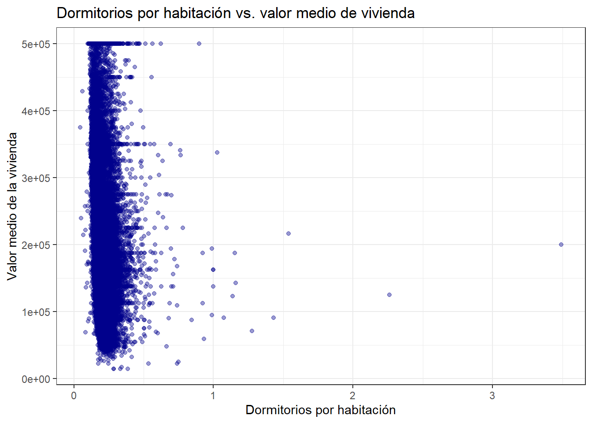
Interpretación del gráfico bivariado: Se aprecia que los valores más altos de la proporción de dormitorios no se asocian visualmente con los precios más altos; la nube principal muestra una tendencia general distinta a la observada con cantidades absolutas. La transformación logarítmica ayuda a reducir el efecto de los valores extremos de la proporción.
df %>%
ggplot(aes(x=ocean_proximity, y=bedrooms_per_room))+
geom_boxplot(fill="#797bb0", outlier.color="red")+
labs(x="Proximidad al océano", y="Dormitorios por habitación",
title="Dormitorios por habitación según proximidad al océano")+
theme_bw()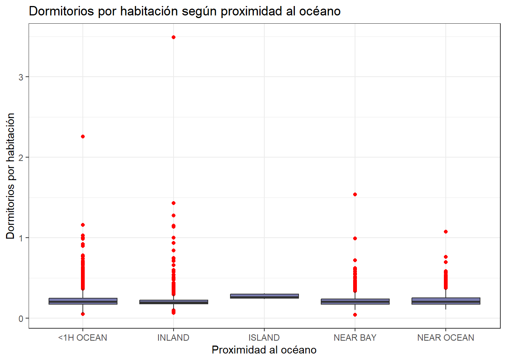
Interpretación numérica vs. categórica: La proporción de dormitorios presenta diferencias entre las categorías y un solapamiento considerable. Al tratarse de una medida relativa, la comparación es menos dependiente del tamaño absoluto del distrito que total_bedrooms y total_rooms por separado.
1.7.4 EDA de population_per_household
df %>%
ggplot(aes(x=population_per_household))+
geom_histogram(aes(y=after_stat(density)), binwidth=1, fill="#797bb0", color="white", alpha=0.6)+
geom_density(color="darkblue", linewidth=1.1)+
labs(title="Distribución de población por hogar", x="Población por hogar", y="Densidad")+
theme_bw()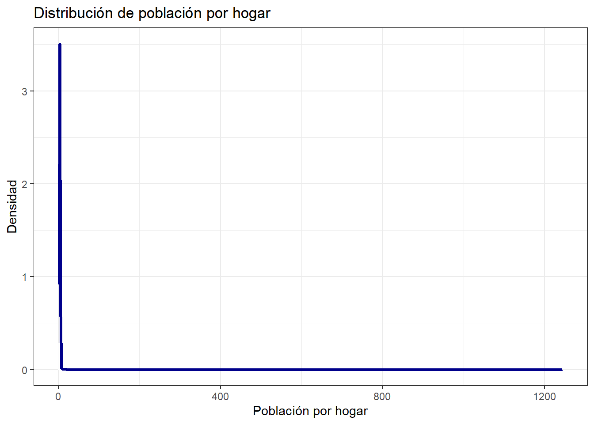
Interpretación del histograma: La población por hogar es la razón con la cola derecha más extrema. La gran mayoría de los distritos se agrupa cerca de valores pequeños y unos pocos presentan razones excepcionalmente altas. Esta asimetría muy fuerte hace necesaria una transformación logarítmica antes de repetir su análisis.
df %>%
ggplot(aes(y=population_per_household, x=""))+
geom_boxplot(fill="#797bb0", color="black", outlier.color="red")+
stat_summary(fun=mean, geom="point", shape=20, size=3, color="darkblue")+
labs(x="", y="Población por hogar", title="Boxplot de población por hogar")+
theme_bw()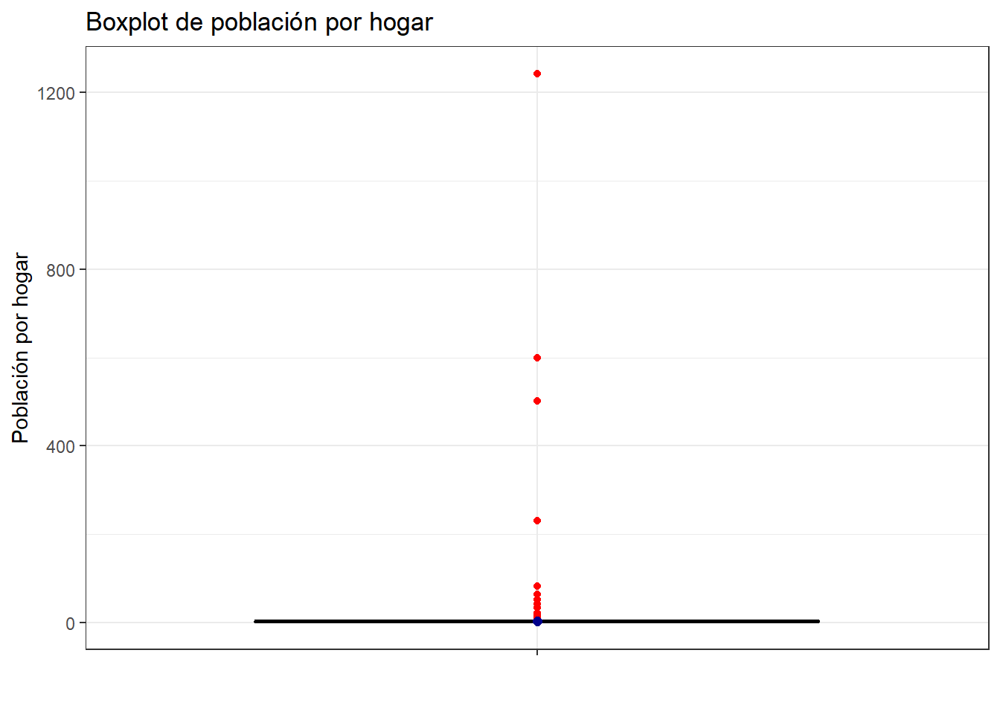
Interpretación del boxplot: El boxplot de population_per_household confirma que los valores extremos superiores se encuentran muy separados del rango central. La diferencia entre el cuerpo principal y esos casos explica la fuerte asimetría positiva observada en el resumen estadístico y respalda el uso posterior de una transformación logarítmica.
df %>%
ggplot(aes(x=population_per_household, y=median_house_value))+
geom_point(alpha=0.4, color="darkblue")+
labs(x="Población por hogar", y="Valor medio de la vivienda",
title="Población por hogar vs. valor medio de vivienda")+
theme_bw()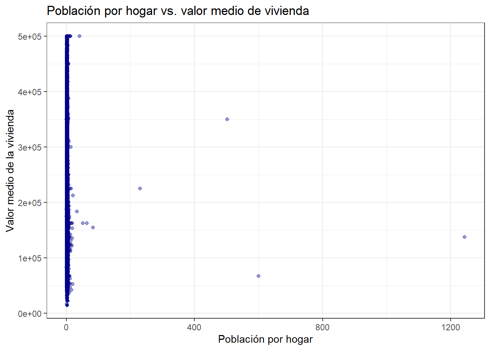
Interpretación del gráfico bivariado: La mayor parte de las observaciones de población por hogar se encuentra muy concentrada, mientras unos pocos valores extremos expanden fuertemente el eje horizontal. Esto dificulta interpretar el patrón original y justifica revisar la relación después de transformar la variable.
df %>%
ggplot(aes(x=ocean_proximity, y=population_per_household))+
geom_boxplot(fill="#797bb0", outlier.color="red")+
labs(x="Proximidad al océano", y="Población por hogar",
title="Población por hogar según proximidad al océano")+
theme_bw()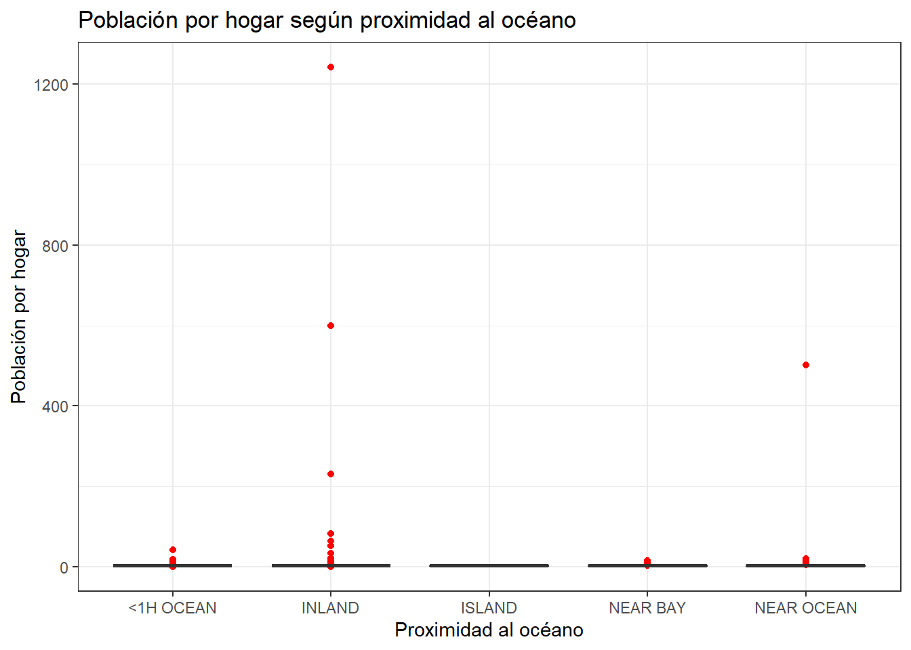
Interpretación numérica vs. categórica: La población por hogar presenta valores centrales relativamente próximos entre varias categorías, pero algunos casos extremos amplían mucho la escala. La versión logarítmica permite observar mejor las diferencias habituales entre los grupos.
1.8 Tratamiento de la asimetría de las variables creadas
El resumen anterior muestra que las tres variables creadas mediante ratios presentan asimetría positiva fuerte. Para reducir el efecto de las colas derechas se aplica log1p(), que equivale a log(1 + x) y conserva definidos los valores iguales a cero.
df <- df %>%
mutate(
log_rooms_per_household = log1p(rooms_per_household),
log_bedrooms_per_room = log1p(bedrooms_per_room),
log_population_per_household = log1p(population_per_household)
)1.8.1 Resumen estadístico después de la transformación logarítmica
df %>%
select(log_rooms_per_household, log_bedrooms_per_room, log_population_per_household) %>%
pivot_longer(cols=everything(), names_to="variable", values_to="valor") %>%
group_by(variable) %>%
summarise(
n=length(valor), media=mean(valor), sd=sd(valor), mediana=median(valor),
RIC=IQR(valor), Q1=quantile(valor,0.25), Q3=quantile(valor,0.75),
minimo=min(valor), maximo=max(valor), asimetria=skewness(valor),
curtosis=kurtosis(valor)
)## # A tibble: 3 × 12
## variable n media sd mediana RIC Q1 Q3 minimo maximo asimetria
## <chr> <int> <dbl> <dbl> <dbl> <dbl> <dbl> <dbl> <dbl> <dbl> <dbl>
## 1 log_bed… 20640 0.193 0.0506 0.185 0.0537 0.162 0.215 0.0449 1.50 3.50
## 2 log_pop… 20640 1.35 0.208 1.34 0.222 1.23 1.45 0.526 7.13 3.88
## 3 log_roo… 20640 1.83 0.232 1.83 0.259 1.69 1.95 0.613 4.96 1.39
## # ℹ 1 more variable: curtosis <dbl>1.8.2 EDA de log_rooms_per_household
df %>%
ggplot(aes(x=log_rooms_per_household))+
geom_histogram(aes(y=after_stat(density)), bins=35, fill="#797bb0", color="white", alpha=0.6)+
geom_density(color="darkblue", linewidth=1.1)+
labs(title="Distribución de log de habitaciones por hogar", x="Log de habitaciones por hogar", y="Densidad")+
theme_bw()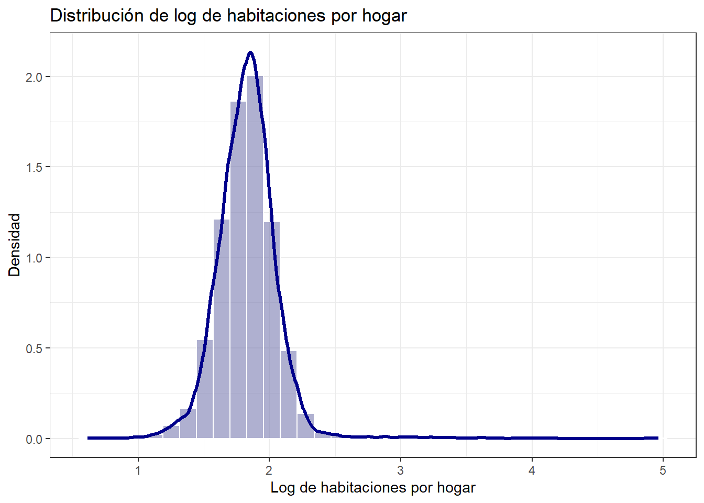
Interpretación del histograma: Después de aplicar log1p, la cola derecha de habitaciones por hogar se comprime notablemente y la mayor parte de los datos ocupa una escala más equilibrada. Los valores extremos siguen existiendo, pero tienen menor influencia visual, lo que facilita estudiar la distribución y las relaciones posteriores.
df %>%
ggplot(aes(y=log_rooms_per_household, x=""))+
geom_boxplot(fill="#797bb0", color="black", outlier.color="red")+
stat_summary(fun=mean, geom="point", shape=20, size=3, color="darkblue")+
labs(x="", y="Log de habitaciones por hogar", title="Boxplot de log de habitaciones por hogar")+
theme_bw()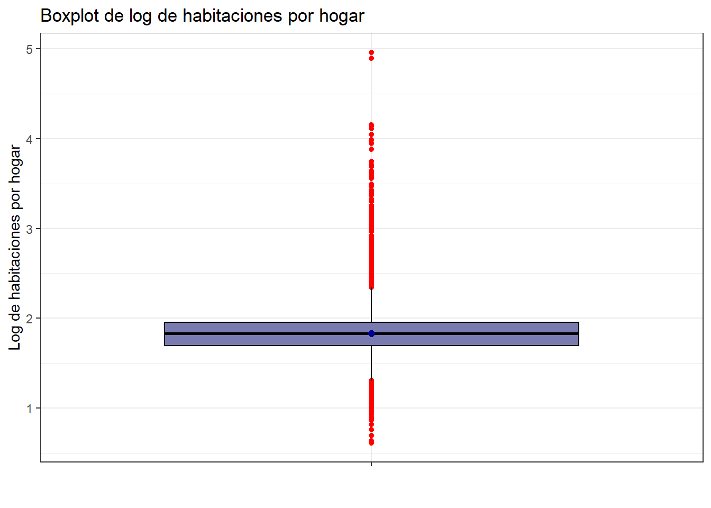
Interpretación del boxplot: En la escala logarítmica los valores altos quedan comprimidos y el rango central puede observarse con mayor detalle. Aunque todavía pueden aparecer puntos señalados como atípicos, su separación respecto a la caja es menor que en la escala original y la distribución resulta más manejable para el análisis exploratorio.
df %>%
ggplot(aes(x=log_rooms_per_household, y=median_house_value))+
geom_point(alpha=0.4, color="darkblue")+
labs(x="Log de habitaciones por hogar", y="Valor medio de la vivienda",
title="Log de habitaciones por hogar vs. valor medio de vivienda")+
theme_bw()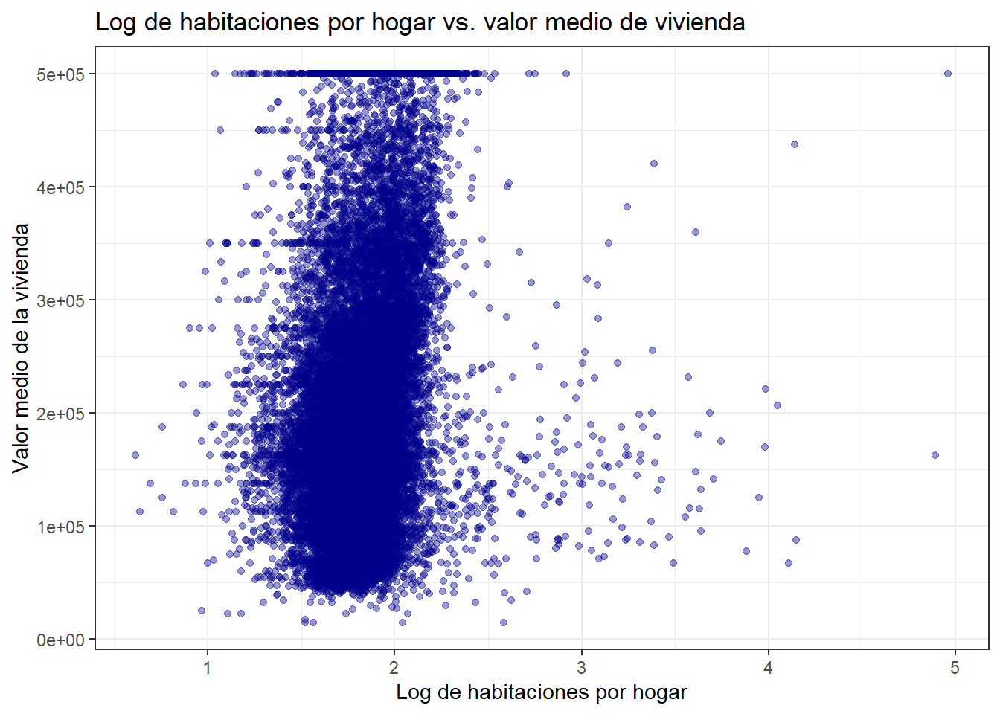
Interpretación del gráfico bivariado: Al reducirse la influencia de los valores extremos, la nube principal se distingue con mayor claridad que con rooms_per_household en su escala original. La transformación no crea una relación nueva con el precio, su función es permitir observar mejor el patrón existente entre la mayoría de las observaciones.
df %>%
ggplot(aes(x=ocean_proximity, y=log_rooms_per_household))+
geom_boxplot(fill="#797bb0", outlier.color="red")+
labs(x="Proximidad al océano", y="Log de habitaciones por hogar",
title="Log de habitaciones por hogar según proximidad al océano")+
theme_bw()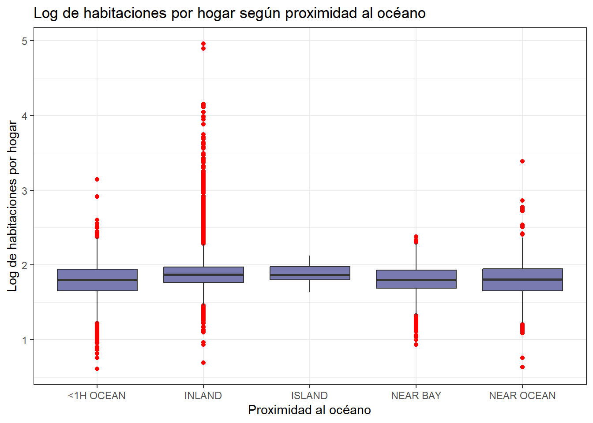
Interpretación numérica vs. categórica: La escala logarítmica permite comparar las categorías de ocean_proximity sin que unos pocos valores extremos dominen el eje vertical. Se conserva el orden relativo de las observaciones, pero las diferencias dentro del rango habitual de rooms_per_household se vuelven más visibles.
1.8.3 EDA de log_bedrooms_per_room
df %>%
ggplot(aes(x=log_bedrooms_per_room))+
geom_histogram(aes(y=after_stat(density)), bins=35, fill="#797bb0", color="white", alpha=0.6)+
geom_density(color="darkblue", linewidth=1.1)+
labs(title="Distribución de log de dormitorios por habitación", x="Log de dormitorios por habitación", y="Densidad")+
theme_bw()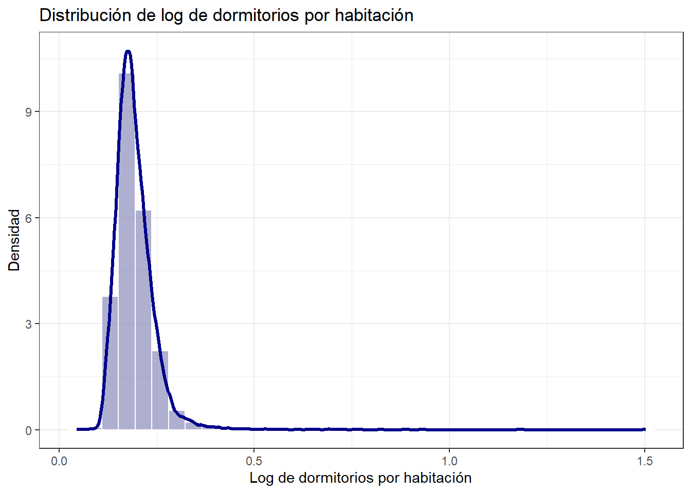
Interpretación del histograma: La transformación logarítmica reduce el peso de los valores altos de la proporción de dormitorios y hace más visible la concentración principal. La distribución continúa conservando la información ordinal de la variable original, pero en una escala menos dominada por los extremos.
df %>%
ggplot(aes(y=log_bedrooms_per_room, x=""))+
geom_boxplot(fill="#797bb0", color="black", outlier.color="red")+
stat_summary(fun=mean, geom="point", shape=20, size=3, color="darkblue")+
labs(x="", y="Log de dormitorios por habitación", title="Boxplot de log de dormitorios por habitación")+
theme_bw()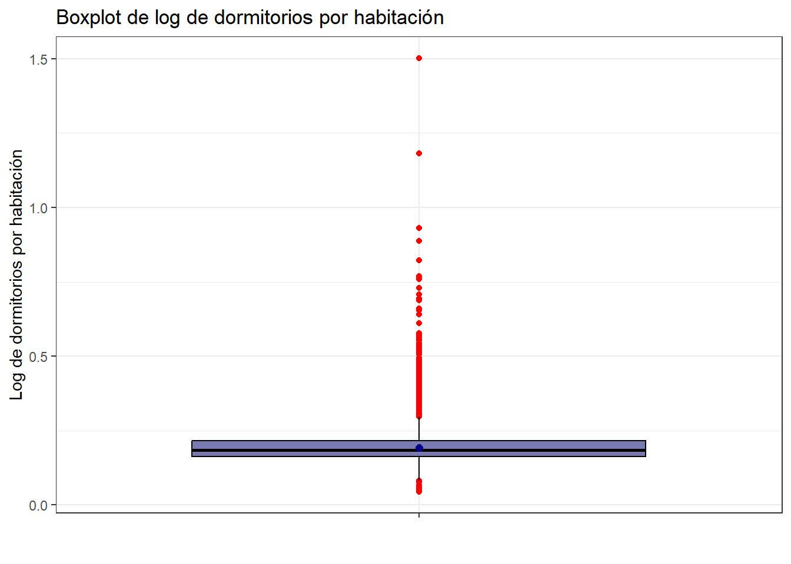
Interpretación del boxplot: En la escala logarítmica los valores altos quedan comprimidos y el rango central puede observarse con mayor detalle. Aunque todavía pueden aparecer puntos señalados como atípicos, su separación respecto a la caja es menor que en la escala original y la distribución resulta más manejable para el análisis exploratorio.
df %>%
ggplot(aes(x=log_bedrooms_per_room, y=median_house_value))+
geom_point(alpha=0.4, color="darkblue")+
labs(x="Log de dormitorios por habitación", y="Valor medio de la vivienda",
title="Log de dormitorios por habitación vs. valor medio de vivienda")+
theme_bw()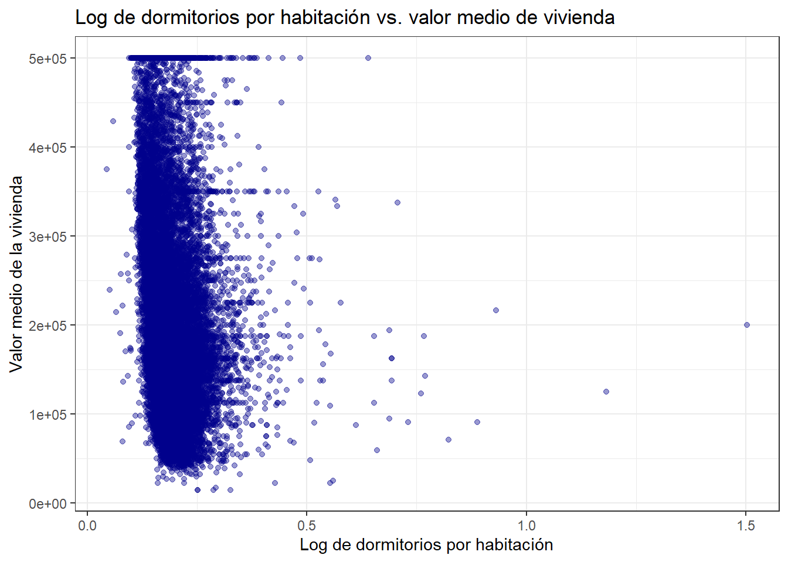
Interpretación del gráfico bivariado: Al reducirse la influencia de los valores extremos, la nube principal se distingue con mayor claridad que con bedrooms_per_room en su escala original. La transformación no crea una relación nueva con el precio; su función es permitir observar mejor el patrón existente entre la mayoría de las observaciones.
df %>%
ggplot(aes(x=ocean_proximity, y=log_bedrooms_per_room))+
geom_boxplot(fill="#797bb0", outlier.color="red")+
labs(x="Proximidad al océano", y="Log de dormitorios por habitación",
title="Log de dormitorios por habitación según proximidad al océano")+
theme_bw()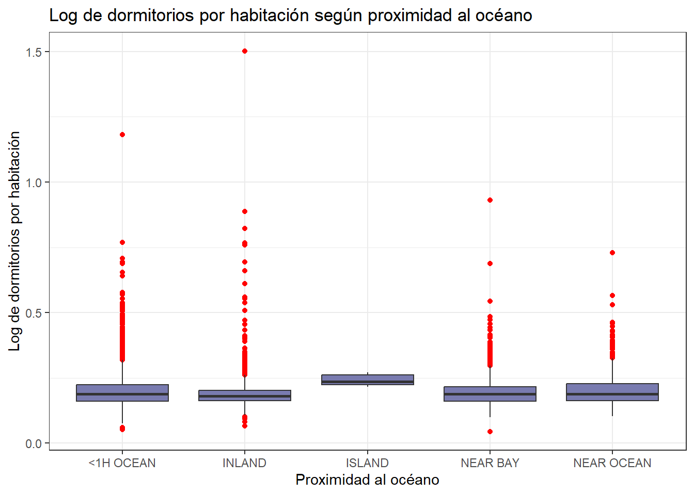
Interpretación numérica vs. categórica: La escala logarítmica permite comparar las categorías de ocean_proximity sin que unos pocos valores extremos dominen el eje vertical. Se conserva el orden relativo de las observaciones, pero las diferencias dentro del rango habitual de bedrooms_per_room se vuelven más visibles.
1.8.4 EDA de log_population_per_household
df %>%
ggplot(aes(x=log_population_per_household))+
geom_histogram(aes(y=after_stat(density)), bins=35, fill="#797bb0", color="white", alpha=0.6)+
geom_density(color="darkblue", linewidth=1.1)+
labs(title="Distribución de log de población por hogar", x="Log de población por hogar", y="Densidad")+
theme_bw()Interpretación del histograma: La transformación logarítmica reduce de forma importante la enorme separación producida por los valores extremos de población por hogar. La nube principal queda mucho más extendida en la escala gráfica, permitiendo analizar mejor el comportamiento de la mayoría de los distritos.
df %>%
ggplot(aes(y=log_population_per_household, x=""))+
geom_boxplot(fill="#797bb0", color="black", outlier.color="red")+
stat_summary(fun=mean, geom="point", shape=20, size=3, color="darkblue")+
labs(x="", y="Log de población por hogar", title="Boxplot de log de población por hogar")+
theme_bw()Interpretación del boxplot: En la escala logarítmica los valores altos quedan comprimidos y el rango central puede observarse con mayor detalle. Aunque todavía pueden aparecer puntos señalados como atípicos, su separación respecto a la caja es menor que en la escala original y la distribución resulta más manejable para el análisis exploratorio.
df %>%
ggplot(aes(x=log_population_per_household, y=median_house_value))+
geom_point(alpha=0.4, color="darkblue")+
labs(x="Log de población por hogar", y="Valor medio de la vivienda",
title="Log de población por hogar vs. valor medio de vivienda")+
theme_bw()Interpretación del gráfico bivariado: Al reducirse la influencia de los valores extremos, la nube principal se distingue con mayor claridad que con population_per_household en su escala original. La transformación no crea una relación nueva con el precio; su función es permitir observar mejor el patrón existente entre la mayoría de las observaciones.
df %>%
ggplot(aes(x=ocean_proximity, y=log_population_per_household))+
geom_boxplot(fill="#797bb0", outlier.color="red")+
labs(x="Proximidad al océano", y="Log de población por hogar",
title="Log de población por hogar según proximidad al océano")+
theme_bw()Interpretación numérica vs. categórica: La escala logarítmica permite comparar las categorías de ocean_proximity sin que unos pocos valores extremos dominen el eje vertical. Se conserva el orden relativo de las observaciones, pero las diferencias dentro del rango habitual de population_per_household se vuelven más visibles.
1.9 ggpairs() después de la ingeniería de características
Finalmente se repite la exploración conjunta incluyendo las variables transformadas que representan los ratios, con el fin de observar los patrones después de la ingeniería de características.
df %>%
select(
longitude, latitude, housing_median_age, median_income,
median_house_value,
log_rooms_per_household,
log_bedrooms_per_room,
log_population_per_household
) %>%
ggpairs(
upper=list(continuous=wrap("points", alpha=0.15, size=0.3)),
lower=list(continuous=wrap("points", alpha=0.15, size=0.3)),
diag=list(continuous="densityDiag")
)Interpretación: El nuevo ggpairs() permite observar conjuntamente las características originales que describen ubicación, antigüedad e ingreso con las nuevas variables relativas transformadas. A diferencia de las cantidades absolutas de habitaciones, dormitorios, población y hogares, los ratios describen características internas del distrito y reducen la dependencia directa del tamaño total. La transformación logarítmica, además, evita que unos pocos valores extremos compriman excesivamente los gráficos de dispersión.
1.10 Verificacion de medias.
## Loading required package: airports## Loading required package: cherryblossom## Loading required package: usdata##
## Attaching package: 'openintro'## The following object is masked from 'package:GGally':
##
## tips## Loading required package: carData##
## Attaching package: 'car'## The following object is masked from 'package:openintro':
##
## densityPlot## The following object is masked from 'package:dplyr':
##
## recode## The following object is masked from 'package:purrr':
##
## some##
## Attaching package: 'rstatix'## The following object is masked from 'package:stats':
##
## filter#data
df <- read_excel("verificacion_medias/verificacion_medias/datos/datos_medicos.xlsx")
#transformacion
dfps <- df %>%
filter(Presion == "PresionSistolica") |>
pull(Valores)
dfpd <- df %>%
filter(Presion == "PresionDiastolica") |>
pull(Valores)
df$Presion <- factor(df$Presion)
df %>%
group_by(Presion) %>%
summarise(
n = length(Valores),
promedio = mean(Valores),
desviacion_estandar = sd(Valores),
mediana = median(Valores),
ric = IQR(Valores),
minimo = min(Valores),
maximo = max(Valores)
)## # A tibble: 2 × 8
## Presion n promedio desviacion_estandar mediana ric minimo maximo
## <fct> <int> <dbl> <dbl> <dbl> <dbl> <dbl> <dbl>
## 1 PresionDiastol… 100 78.9 9.48 77.8 12.4 59.9 112.
## 2 PresionSistoli… 100 121. 9.13 121. 11.9 96.9 142.##
## Asymptotic one-sample Kolmogorov-Smirnov test
##
## data: scale(dfps)
## D = 0.058097, p-value = 0.8884
## alternative hypothesis: two-sided##
## Asymptotic one-sample Kolmogorov-Smirnov test
##
## data: dfps
## D = 0.058097, p-value = 0.8884
## alternative hypothesis: two-sided##
## Asymptotic one-sample Kolmogorov-Smirnov test
##
## data: scale(dfpd)
## D = 0.057927, p-value = 0.8905
## alternative hypothesis: two-sided##
## Asymptotic one-sample Kolmogorov-Smirnov test
##
## data: dfpd
## D = 0.057927, p-value = 0.8905
## alternative hypothesis: two-sided##
## F test to compare two variances
##
## data: dfpd and dfps
## F = 1.0778, num df = 99, denom df = 99, p-value = 0.7102
## alternative hypothesis: true ratio of variances is not equal to 1
## 95 percent confidence interval:
## 0.7251696 1.6018204
## sample estimates:
## ratio of variances
## 1.077772#Comprobacion manual de la diferencia de varianzas
#Formula: F = s1^2 / s2^2
n1 <- length(dfpd)
n2 <- length(dfps)
s1_2 <- var(dfpd)
s2_2 <- var(dfps)
F_manual <- s1_2 / s2_2
gl1 <- n1 - 1
gl2 <- n2 - 1
alpha <- 0.05
IC_varianzas <- c(
inferior = F_manual / qf(1 - alpha / 2, gl1, gl2),
superior = F_manual / qf(alpha / 2, gl1, gl2)
)
F_manual## [1] 1.077772## [1] 99## [1] 99## inferior superior
## 0.7251696 1.6018204##
## Two Sample t-test
##
## data: dfps and dfpd
## t = 31.888, df = 198, p-value < 2.2e-16
## alternative hypothesis: true difference in means is not equal to 0
## 95 percent confidence interval:
## 39.36328 44.55275
## sample estimates:
## mean of x mean of y
## 120.90406 78.94604#Comprobacion manual de la diferencia de medias
#Formula para muestras independientes con varianzas iguales
n1 <- length(dfps)
n2 <- length(dfpd)
x1 <- mean(dfps)
x2 <- mean(dfpd)
s1_2 <- var(dfps)
s2_2 <- var(dfpd)
sp2 <- (
(n1 - 1) * s1_2 +
(n2 - 1) * s2_2
) / (n1 + n2 - 2)
t_manual <- (x1 - x2) /
sqrt(sp2 * (1 / n1 + 1 / n2))
gl <- n1 + n2 - 2
IC_medias <- c(
inferior = (x1 - x2) -
qt(1 - alpha / 2, gl) *
sqrt(sp2 * (1 / n1 + 1 / n2)),
superior = (x1 - x2) +
qt(1 - alpha / 2, gl) *
sqrt(sp2 * (1 / n1 + 1 / n2))
)
x1## [1] 120.9041## [1] 78.94604## [1] 41.95802## [1] 86.56337## [1] 31.88841## [1] 198## inferior superior
## 39.36328 44.55275##
## Cohen's d
##
## d estimate: 4.509702 (large)
## 95 percent confidence interval:
## lower upper
## 3.984821 5.034583#Comprobacion manual del tamaño del efecto
#Desviacion estandar combinada ponderada
sp <- sqrt(
(
(n1 - 1) * s1_2 +
(n2 - 1) * s2_2
) / (n1 + n2 - 2)
)
d_cohen_manual <- abs(x1 - x2) / sp
sp## [1] 9.303944## [1] 4.509702#Comprobacion con el promedio cuadratico simple
sp_simple <- sqrt(
(s1_2 + s2_2) / 2
)
d_cohen_simple <- abs(x1 - x2) / sp_simple
sp_simple## [1] 9.303944## [1] 4.509702#Diferencia de medias con varianzas distintas
#data 2---
dfe <- read_excel("verificacion_medias/verificacion_medias/datos/datos_economia.xlsx")
#transformacion 2--
dfg <- dfe |>
filter(`Tipo de cuenta` == "Ganancia") |>
pull(Precio)
dfi <- dfe |>
filter(`Tipo de cuenta` == "Inversion") |>
pull(Precio)
dfe %>%
group_by(`Tipo de cuenta`) %>%
summarise(
n = length(Precio),
promedio = mean(Precio),
desviacion_estandar = sd(Precio),
mediana = median(Precio),
ric = IQR(Precio),
minimo = min(Precio),
maximo = max(Precio)
)## # A tibble: 2 × 8
## `Tipo de cuenta` n promedio desviacion_estandar mediana ric minimo
## <chr> <int> <dbl> <dbl> <dbl> <dbl> <dbl>
## 1 Ganancia 100 778491. 193397. 754834. 253790. 389351.
## 2 Inversion 100 5090406. 912816. 5061756. 1185673. 2690831.
## # ℹ 1 more variable: maximo <dbl>##
## Asymptotic one-sample Kolmogorov-Smirnov test
##
## data: scale(dfg)
## D = 0.057927, p-value = 0.8905
## alternative hypothesis: two-sided##
## Asymptotic one-sample Kolmogorov-Smirnov test
##
## data: scale(dfi)
## D = 0.058097, p-value = 0.8884
## alternative hypothesis: two-sided##
## F test to compare two variances
##
## data: dfi and dfg
## F = 22.277, num df = 99, denom df = 99, p-value < 2.2e-16
## alternative hypothesis: true ratio of variances is not equal to 1
## 95 percent confidence interval:
## 14.9892 33.1095
## sample estimates:
## ratio of variances
## 22.27745#Comprobacion manual de la diferencia de varianzas
#Formula: F = s1^2 / s2^2
n1 <- length(dfi)
n2 <- length(dfg)
s1_2 <- var(dfi)
s2_2 <- var(dfg)
F_manual <- s1_2 / s2_2
gl1 <- n1 - 1
gl2 <- n2 - 1
IC_varianzas <- c(
inferior = F_manual / qf(1 - alpha / 2, gl1, gl2),
superior = F_manual / qf(alpha / 2, gl1, gl2)
)
F_manual## [1] 22.27745## [1] 99## [1] 99## inferior superior
## 14.9892 33.1095##
## Bartlett test of homogeneity of variances
##
## data: Precio by Tipo de cuenta
## Bartlett's K-squared = 177.81, df = 1, p-value < 2.2e-16##
## Fligner-Killeen test of homogeneity of variances
##
## data: Precio by Tipo de cuenta
## Fligner-Killeen:med chi-squared = 82.798, df = 1, p-value < 2.2e-16## Warning in leveneTest.default(y = y, group = group, ...): group coerced to
## factor.## Levene's Test for Homogeneity of Variance (center = median)
## Df F value Pr(>F)
## group 1 107.2 < 2.2e-16 ***
## 198
## ---
## Signif. codes: 0 '***' 0.001 '**' 0.01 '*' 0.05 '.' 0.1 ' ' 1##
## Welch Two Sample t-test
##
## data: dfg and dfi
## t = -46.212, df = 107.87, p-value < 2.2e-16
## alternative hypothesis: true difference in means is not equal to 0
## 95 percent confidence interval:
## -4496870 -4126960
## sample estimates:
## mean of x mean of y
## 778490.6 5090405.9#La formula t de la imagen no se aplica en esta parte
#porque esa formula supone varianzas iguales
#y esta prueba utiliza el procedimiento de Welch
#tamaño del efecto
cohen.d(
dfi,
dfg,
paired = FALSE
)##
## Cohen's d
##
## d estimate: 6.535323 (large)
## 95 percent confidence interval:
## lower upper
## 5.833174 7.237472#Comprobacion manual del tamaño del efecto
n1 <- length(dfi)
n2 <- length(dfg)
x1 <- mean(dfi)
x2 <- mean(dfg)
s1_2 <- var(dfi)
s2_2 <- var(dfg)
sp <- sqrt(
(
(n1 - 1) * s1_2 +
(n2 - 1) * s2_2
) / (n1 + n2 - 2)
)
d_cohen_manual <- abs(x1 - x2) / sp
sp## [1] 659786.1## [1] 6.535323#Comprobacion con el promedio cuadratico simple
sp_simple <- sqrt(
(s1_2 + s2_2) / 2
)
d_cohen_simple <- abs(x1 - x2) / sp_simple
sp_simple## [1] 659786.1## [1] 6.535323# 4.2 Comparacion de grupos pareados con estadistica parametrica
#data 3---
# Datos de tiempos antes y después de la intervención educativa
datos <- data.frame(
estudiante = c(1:10),
antes = c(
12.9, 13.5, 12.8, 15.6, 17.2,
19.2, 12.6, 15.3, 14.4, 11.3
),
despues = c(
12.7, 13.6, 12.0, 15.2, 16.8,
20.0, 12.0, 15.9, 16.0, 11.1
)
)
# Exploratorio de los datos
datos <- datos |>
mutate(
Diferencia = despues - antes
)
datos |>
summarise(
media_antes = mean(antes),
media_despues = mean(despues),
desviacion_antes = sd(antes),
desviacion_despues = sd(despues),
media_diferencia = mean(Diferencia),
desviacion_diferencia = sd(Diferencia)
)## media_antes media_despues desviacion_antes desviacion_despues
## 1 14.48 14.53 2.392953 2.755621
## media_diferencia desviacion_diferencia
## 1 0.05 0.7412452##
## Shapiro-Wilk normality test
##
## data: datos$Diferencia
## W = 0.90307, p-value = 0.2367##
## Paired t-test
##
## data: datos$despues and datos$antes
## t = 0.21331, df = 9, p-value = 0.8358
## alternative hypothesis: true mean difference is not equal to 0
## 95 percent confidence interval:
## -0.4802549 0.5802549
## sample estimates:
## mean difference
## 0.05#La formula t de la imagen no se aplica en esta parte
#porque los datos son pareados y no muestras independientes
#prueba de efecto
cohen.d(
datos$despues,
datos$antes,
paired = TRUE
)##
## Cohen's d
##
## d estimate: 0.0169815 (negligible)
## 95 percent confidence interval:
## lower upper
## -0.1502851 0.1842481#La formula de Cohen mostrada en la imagen corresponde
#a muestras independientes, no a datos pareados
#Comparacion de grupos independientes
#con estadistica no parametrica
data("births")
dfb <- births
#caracterizar el peso del bebe segun si la madre fuma o no
#transformaciones
dfbsum <- dfb %>%
group_by(smoke) %>%
summarise(
n = length(weight),
promedio = mean(weight),
desviacion_estandar = sd(weight),
mediana = median(weight),
ric = IQR(weight),
minimo = min(weight),
maximo = max(weight)
)
#Verificar supuestos de normalidad
df_dist <- dfb |>
group_by(smoke) |>
summarise(
n = length(weight),
est_ks = ks.test(
scale(weight),
"pnorm"
)$statistic,
p_ks = ks.test(
scale(weight),
"pnorm"
)$p.value,
est_sw = shapiro.test(
weight
)$statistic,
p_sw = shapiro.test(
weight
)$p.value,
est_l = lillie.test(
weight
)$statistic,
p_l = lillie.test(
weight
)$p.value
)## Warning: There were 4 warnings in `summarise()`.
## The first warning was:
## ℹ In argument: `est_ks = ks.test(scale(weight), "pnorm")$statistic`.
## ℹ In group 1: `smoke = nonsmoker`.
## Caused by warning in `ks.test.default()`:
## ! ties should not be present for the one-sample Kolmogorov-Smirnov test
## ℹ Run `dplyr::last_dplyr_warnings()` to see the 3 remaining warnings.#Los datos no cuentan con una distribucion normal
#levene
leveneTest(
weight ~ smoke,
data = dfb,
center = median
)## Levene's Test for Homogeneity of Variance (center = median)
## Df F value Pr(>F)
## group 1 0.4442 0.5062
## 148##
## Wilcoxon rank sum test with continuity correction
##
## data: weight by smoke
## W = 2879, p-value = 0.1312
## alternative hypothesis: true location shift is not equal to 0#No hay diferencias significativas entre el peso del bebe
#Respecto a si la madre fuma o no
dataQ <- read.delim("verificacion_medias/verificacion_medias/datos/dataQ.tsv", header=TRUE)
head(dataQ)## Participantes Experimento Q1 Q2 Q3 Q4 Edad Genero Nivel.educativo
## 1 1 Pretest 2 2 2 2 37 F PR
## 2 2 Pretest 2 4 3 2 53 F PO
## 3 3 Pretest 2 3 1 2 42 F PO
## 4 4 Pretest 3 4 2 1 36 F PO
## 5 5 Pretest 2 2 2 2 35 M PO
## 6 6 Pretest 4 3 1 3 53 M PO
## Tiempo.de.labor
## 1 3
## 2 5
## 3 3
## 4 6
## 5 8
## 6 3dfag <- dataQ |> group_by(Experimento) |>
summarise(n=length(Q1),
minimo=min(Q1),
maximo=max(Q1),
media=mean(Q1),
mediana=median(Q1),
desviacion_estandar=sd(Q1),
RIC=IQR(Q1)
)
df_d <- dataQ |>
group_by(Experimento) |>
summarise(
n = length(Q1),
est_ks = ks.test(scale(Q1),"pnorm")$statistic,
p_ks = ks.test(scale(Q1),"pnorm")$p.value,
est_sw = shapiro.test(Q1)$statistic,
p_sw = shapiro.test(Q1)$p.value,
est_l = lillie.test(Q1)$statistic,
p_l = lillie.test(Q1)$p.value)## Warning: There were 4 warnings in `summarise()`.
## The first warning was:
## ℹ In argument: `est_ks = ks.test(scale(Q1), "pnorm")$statistic`.
## ℹ In group 1: `Experimento = "Post-test"`.
## Caused by warning in `ks.test.default()`:
## ! ties should not be present for the one-sample Kolmogorov-Smirnov test
## ℹ Run `dplyr::last_dplyr_warnings()` to see the 3 remaining warnings.pretestq1 <- dataQ |>
select(Experimento,Q1) |>
filter(Experimento== "Pretest")
postestq1 <- dataQ |>
select(Experimento,Q1) |>
filter(Experimento== "Post-test")
wilcox.test(x= pretestq1$Q1,y= postestq1$Q1,paired=TRUE)##
## Wilcoxon signed rank exact test
##
## data: pretestq1$Q1 and postestq1$Q1
## V = 0, p-value = 1.421e-14
## alternative hypothesis: true location shift is not equal to 0#La prueba de rango del signo de wilcoxon
#con una confianza del 95% podemos decir que hay diferencias estadisticmaente
#significativas de la pregunta de percepcion q1 segun el experimento (v=0, pvalor <0.001)
#Determinar tamaño del efecto con pruebas no parametricas
dataQ |>
wilcox_effsize(Q1 ~ Experimento, paired=TRUE)## # A tibble: 1 × 7
## .y. group1 group2 effsize n1 n2 magnitude
## * <chr> <chr> <chr> <dbl> <int> <int> <ord>
## 1 Q1 Post-test Pretest 0.879 49 49 large# El tamaño del efecto de la diferencia fue estadisticamente sifnificativa
#hacer ejercicio de diferencia de proporciones completo
# ANOVA de un factor ------------
df <- data.frame(Empleados = c(0.66, 0.63, 0.65, 0.69, 0.44, 0.63, 0.61, 0.42, 0.59, 0.46),
Agricultores = c(0.65, 0.60, 0.69, 0.73, 0.52, 0.85, 0.81, NA, NA, NA),
NoExpuestos = c(0.93, 0.99, 0.96, 0.74, 0.81, 0.93, 0.63, 0.68, 0.99, NA))
empleados <- na.omit(df$Empleados)
agricultores<- na.omit(df$Agricultores)
no_expuestos<- na.omit(df$NoExpuestos)
# Hallemos el tamaño de cada tratamiento
n1 <- length(empleados)
n2<- length(agricultores)
n3<- length(no_expuestos)
N <- n1+n2+n3
k<-ncol(df)
# Hallemos los promedios de los tratamientos
xbar_1=mean(empleados)
xbar_2=mean(agricultores)
xbar_3=mean(no_expuestos)
# Hallemos el promedio global
xbar_total <- (sum(empleados)
+sum(agricultores)
+sum(no_expuestos))/N
# Hallemos el SST
sst= sum((empleados-xbar_total)**2)+
sum((agricultores-xbar_total)**2)+
sum((no_expuestos-xbar_total)**2)
#Hallemos el ssa
ssa=n1*(xbar_1-xbar_total)**2+
n2*(xbar_2-xbar_total)**2+
n3*(xbar_3-xbar_total)**2
#hallemos el sse
sse=sst-ssa
#MSE Y MSA
msa=ssa/(k-1)
mse=sse/(N-k)
# Estadistico F
f=msa/mse
# F tabulado
alpha=0.05
v1=k-1
v2=N-k
f_critico=qf(1-alpha,df1 = v1,df2 = v2)
# Al fcritico ser menor que el F se rechaza
#la hipotesis nula y por tanto hay diferencia en por lo menos 1 grupo
#pvalor
pvalor=1-pf(f,v1,v2)
# el pvalor es <0.05 por lo que se rechaza la hipotesis
#nula y hay por lo menos un grupo es diferente